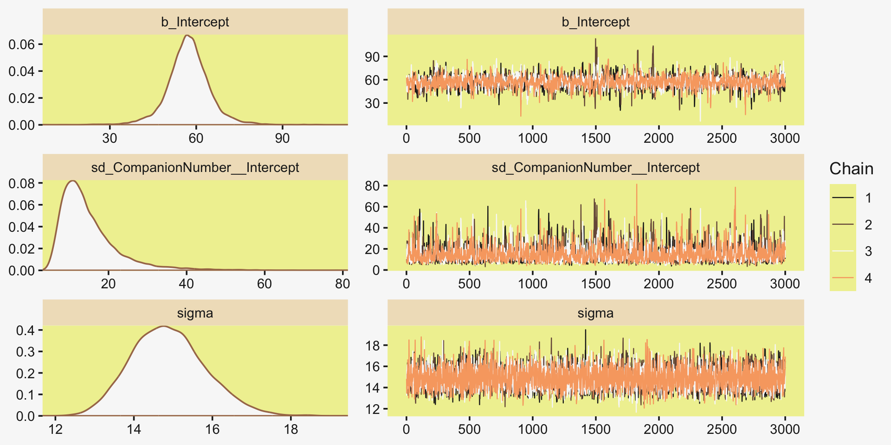
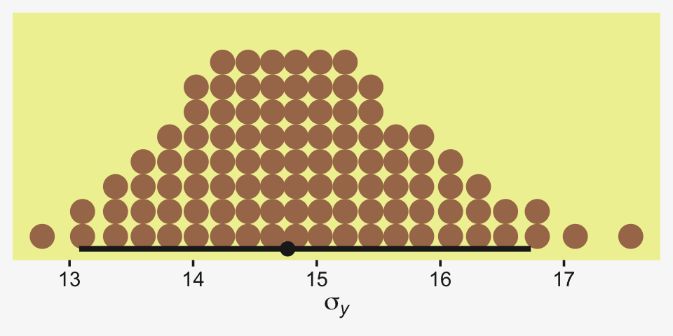
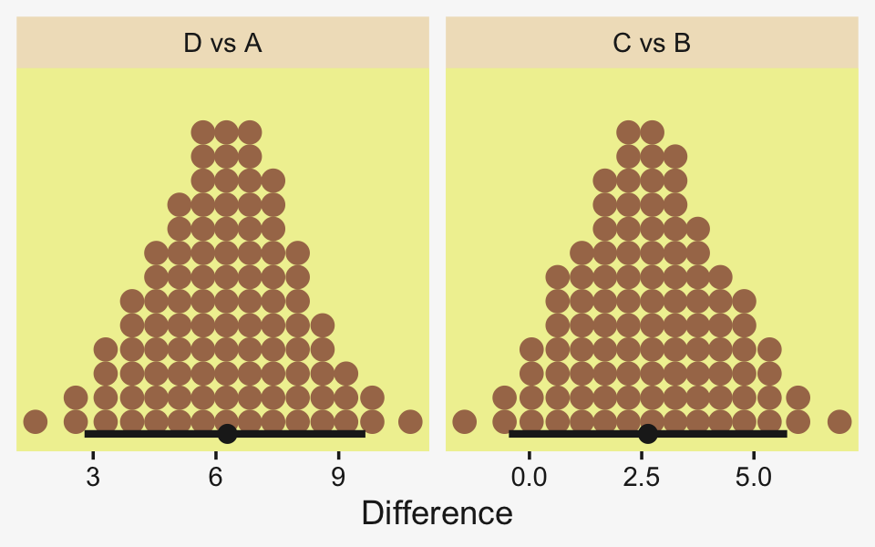

19 Metric Predicted Variable with One Nominal Predictor
This chapter considers data structures that consist of a metric predicted variable and a nominal predictor…. This type of data structure can arise from experiments or from observational studies. In experiments, the researcher assigns the categories (at random) to the experimental subjects. In observational studies, both the nominal predictor value and the metric predicted value are generated by processes outside the direct control of the researcher. In either case, the same mathematical description can be applied to the data (although causality is best inferred from experimental intervention).
The traditional treatment of this sort of data structure is called single-factor analysis of variance (ANOVA), or sometimes one-way ANOVA. Our Bayesian approach will be a hierarchical generalization of the traditional ANOVA model. The chapter will also consider the situation in which there is also a metric predictor that accompanies the primary nominal predictor. The metric predictor is sometimes called a covariate, and the traditional treatment of this data structure is called analysis of covariance (ANCOVA). The chapter also considers generalizations of the traditional models, because it is straight forward in Bayesian software to implement heavy-tailed distributions to accommodate outliers, along with hierarchical structure to accommodate heterogeneous variances in the different groups, etc. (Kruschke, 2015, pp. 553–554)
19.1 Describing multiple groups of metric data
Figure 19.1 illustrates the conventional description of grouped metric data. Each group is represented as a position on the horizontal axis. The vertical axis represents the variable to be predicted by group membership. The data are assumed to be normally distributed within groups, with equal standard deviation in all groups. The group means are deflections from overall baseline, such that the deflections sum to zero. Figure 19.1 provides a specific numerical example, with data that were randomly generated from the model. (p. 554)
We’ll want a custom data-generating function for our primary group data.
library(tidyverse)
generate_data <- function(seed, mean) {
set.seed(seed)
rnorm(n, mean = grand_mean + mean, sd = 2)
}
n <- 20
grand_mean <- 101
d <-
tibble(group = 1:5,
deviation = c(4, -5, -2, 6, -3)) %>%
mutate(d = map2(group, deviation, generate_data)) %>%
unnest(d) %>%
mutate(iteration = rep(1:n, times = 5))
glimpse(d)## Rows: 100
## Columns: 4
## $ group <int> 1, 1, 1, 1, 1, 1, 1, 1, 1, 1, 1, 1, 1, 1, 1, 1, 1, 1, 1, 1, 2, 2, 2, 2, 2, 2, 2,…
## $ deviation <dbl> 4, 4, 4, 4, 4, 4, 4, 4, 4, 4, 4, 4, 4, 4, 4, 4, 4, 4, 4, 4, -5, -5, -5, -5, -5, …
## $ d <dbl> 103.74709, 105.36729, 103.32874, 108.19056, 105.65902, 103.35906, 105.97486, 106…
## $ iteration <int> 1, 2, 3, 4, 5, 6, 7, 8, 9, 10, 11, 12, 13, 14, 15, 16, 17, 18, 19, 20, 1, 2, 3, …Here we’ll make a tibble containing the necessary data for the rotated Gaussians. As far as I can tell, Kruschke’s Gaussians only span to the bounds of percentile-based 98% intervals. We partition off those bounds for each group by the ll and ul columns in the first mutate() function. In the second mutate(), we expand the dataset to include a sequence of 100 values between those lower- and upper-limit points. In the third mutate(), we feed those points into the dnorm() function, with group-specific means and a common sd.
densities <-
d %>%
distinct(group, deviation) %>%
mutate(ll = qnorm(.01, mean = grand_mean + deviation, sd = 2),
ul = qnorm(.99, mean = grand_mean + deviation, sd = 2)) %>%
mutate(d = map2(ll, ul, seq, length.out = 100)) %>%
mutate(density = map2(d, grand_mean + deviation, dnorm, sd = 2)) %>%
unnest(c(d, density))
head(densities)## # A tibble: 6 x 6
## group deviation ll ul d density
## <int> <dbl> <dbl> <dbl> <dbl> <dbl>
## 1 1 4 100. 110. 100. 0.0133
## 2 1 4 100. 110. 100. 0.0148
## 3 1 4 100. 110. 101. 0.0165
## 4 1 4 100. 110. 101. 0.0183
## 5 1 4 100. 110. 101. 0.0203
## 6 1 4 100. 110. 101. 0.0224We’ll need two more supplementary tibbles to add the flourishes to the plot. The arrow tibble will specify our light-gray arrows. The text tibble will contain our annotation information.
arrow <-
tibble(d = grand_mean,
group = 1:5,
deviation = c(4, -5, -2, 6, -3),
offset = .1)
head(arrow)## # A tibble: 5 x 4
## d group deviation offset
## <dbl> <int> <dbl> <dbl>
## 1 101 1 4 0.1
## 2 101 2 -5 0.1
## 3 101 3 -2 0.1
## 4 101 4 6 0.1
## 5 101 5 -3 0.1text <-
tibble(d = grand_mean,
group = c(0:5, 0),
deviation = c(0, 4, -5, -2, 6, -3, 10),
offset = rep(c(1/4, 0), times = c(6, 1)),
angle = rep(c(90, 0), times = c(6, 1)),
label = c("beta[0]==101", "beta['[1]']==4","beta['[2]']==-5", "beta['[3]']==-2", "beta['[4]']==6", "beta['[5]']==3", "sigma['all']==2"))
head(text)## # A tibble: 6 x 6
## d group deviation offset angle label
## <dbl> <dbl> <dbl> <dbl> <dbl> <chr>
## 1 101 0 0 0.25 90 beta[0]==101
## 2 101 1 4 0.25 90 beta['[1]']==4
## 3 101 2 -5 0.25 90 beta['[2]']==-5
## 4 101 3 -2 0.25 90 beta['[3]']==-2
## 5 101 4 6 0.25 90 beta['[4]']==6
## 6 101 5 -3 0.25 90 beta['[5]']==3We’re almost ready to plot. Before we do, let’s talk color and theme. For this chapter, we’ll take our color palette from the palettetown package (Lucas, 2016), which provides an array of color palettes inspired by Pokémon. Our color palette will be #17, which is based on Pidgeotto.
library(palettetown)
scales::show_col(pokepal(pokemon = 17))
pp <- pokepal(pokemon = 17)
pp## [1] "#785848" "#E0B048" "#D03018" "#202020" "#A87858" "#F8E858" "#583828" "#E86040" "#F0F0A0"
## [10] "#F8A870" "#C89878" "#F8F8F8" "#A0A0A0"Our overall plot theme will be based on the default theme_grey() with a good number of adjustments.
theme_set(
theme_grey() +
theme(text = element_text(color = pp[4]),
axis.text = element_text(color = pp[4]),
axis.ticks = element_line(color = pp[4]),
legend.background = element_blank(),
legend.box.background = element_blank(),
legend.key = element_rect(fill = pp[9]),
panel.background = element_rect(fill = pp[9], color = pp[9]),
panel.grid = element_blank(),
plot.background = element_rect(fill = pp[12], color = pp[12]),
strip.background = element_rect(fill = alpha(pp[2], 1/3), color = "transparent"),
strip.text = element_text(color = pp[4]))
)Now make Figure 19.1.
library(ggridges)
d %>%
ggplot(aes(x = d, y = group, group = group)) +
geom_vline(xintercept = grand_mean, color = pp[12]) +
geom_jitter(height = .05, alpha = 4/4, shape = 1, color = pp[10]) +
# the Gaussians
geom_ridgeline(data = densities,
aes(height = -density),
min_height = NA, scale = 3/2, size = 3/4,
fill = "transparent", color = pp[7]) +
# the small arrows
geom_segment(data = arrow,
aes(xend = d + deviation,
y = group + offset, yend = group + offset),
color = pp[5], size = 1,
arrow = arrow(length = unit(.2, "cm"))) +
# the large arrow on the left
geom_segment(aes(x = 80, xend = grand_mean,
y = 0, yend = 0),
color = pp[5], size = 3/4,
arrow = arrow(length = unit(.2, "cm"))) +
# the text
geom_text(data = text,
aes(x = grand_mean + deviation, y = group + offset,
label = label, angle = angle),
size = 4, color = pp[4], parse = T) +
scale_y_continuous(NULL, breaks = 1:5,
labels = c("<1,0,0,0,0>", "<0,1,0,0,0>", "<0,0,1,0,0>", "<0,0,0,1,0>", "<0,0,0,0,1>")) +
xlab(NULL) +
coord_flip(xlim = c(90, 112),
ylim = c(-0.2, 5.5))
The descriptive model presented in Figure 19.1 is the traditional one used by classical ANOVA (which is described a bit more in the next section). More general models are straight forward to implement in Bayesian software. For example, outliers could be accommodated by using heavy-tailed noise distributions (such as a \(t\) distribution) instead of a normal distribution, and different groups could be given different standard deviations. (p. 556)
19.2 Traditional analysis of variance
The terminology, “analysis of variance,” comes from a decomposition of overall data variance into within-group variance and between-group variance (Fisher, 1925). Algebraically, the sum of squared deviations of the scores from their overall mean equals the sum of squared deviations of the scores from their respective group means plus the sum of squared deviations of the group means from the overall mean. In other words, the total variance can be partitioned into within-group variance plus between-group variance. Because one definition of the word “analysis” is separation into constituent parts, the term ANOVA accurately describes the underlying algebra in the traditional methods. That algebraic relation is not used in the hierarchical Bayesian approach presented here. The Bayesian method can estimate component variances, however. Therefore, the Bayesian approach is not ANOVA, but is analogous to ANOVA. (p. 556)
19.3 Hierarchical Bayesian approach
“Our goal is to estimate its parameters in a Bayesian framework. Therefore, all the parameters need to be given a meaningfully structured prior distribution” (p. 557). However, our approach will depart a little from the one in the text. All our parameters will not “have generic noncommittal prior distributions” (p. 557). Most importantly, we will not follow the example in (Gelman, 2006) of putting a broad uniform prior on \(\sigma_y\). Rather, we will continue using the half-Gaussian prior, as recommended by the Stan team. However, we will follow Kruschke’s lead for the overall intercept and use a Gaussian prior “made broad on the scale of the data” (p. 557). And like Kruschke, we will estimate \(\sigma_\beta\) from the data. To further get a sense of this, let’s make our version of the hierarchical model diagram of Figure 19.2.
library(patchwork)
# bracket
p1 <-
tibble(x = .99,
y = .5,
label = "{_}") %>%
ggplot(aes(x = x, y = y, label = label)) +
geom_text(size = 10, hjust = 1, color = pp[8], family = "Times") +
scale_x_continuous(expand = c(0, 0), limits = c(0, 1)) +
ylim(0, 1) +
theme_void()
## plain arrow
# save our custom arrow settings
my_arrow <- arrow(angle = 20, length = unit(0.35, "cm"), type = "closed")
p2 <-
tibble(x = .72,
y = 1,
xend = .68,
yend = .25) %>%
ggplot(aes(x = x, xend = xend,
y = y, yend = yend)) +
geom_segment(arrow = my_arrow, color = pp[4]) +
xlim(0, 1) +
theme_void()
# normal density
p3 <-
tibble(x = seq(from = -3, to = 3, by = .1)) %>%
ggplot(aes(x = x, y = (dnorm(x)) / max(dnorm(x)))) +
geom_area(fill = pp[9]) +
annotate(geom = "text",
x = 0, y = .2,
label = "normal",
size = 7, color = pp[4]) +
annotate(geom = "text",
x = c(0, 1.45), y = .6,
hjust = c(.5, 0),
label = c("italic(M)[0]", "italic(S)[0]"),
size = 7, color = pp[4], family = "Times", parse = T) +
scale_x_continuous(expand = c(0, 0)) +
theme_void() +
theme(axis.line.x = element_line(size = 0.5, color = pp[4]))
# second normal density
p4 <-
tibble(x = seq(from = -3, to = 3, by = .1)) %>%
ggplot(aes(x = x, y = (dnorm(x)) / max(dnorm(x)))) +
geom_area(fill = pp[9]) +
annotate(geom = "text",
x = 0, y = .2,
label = "normal",
size = 7, color = pp[4]) +
annotate(geom = "text",
x = c(0, 1.45), y = .6,
hjust = c(.5, 0),
label = c("0", "sigma[beta]"),
size = 7, color = pp[4], family = "Times", parse = T) +
scale_x_continuous(expand = c(0, 0)) +
theme_void() +
theme(axis.line.x = element_line(size = 0.5, color = pp[4]))
# two annotated arrows
p5 <-
tibble(x = c(.16, .81),
y = c(1, 1),
xend = c(.47, .77),
yend = c(0, 0)) %>%
ggplot(aes(x = x, xend = xend,
y = y, yend = yend)) +
geom_segment(arrow = my_arrow, color = pp[4]) +
annotate(geom = "text",
x = c(.25, .74, .83), y = .5,
label = c("'~'", "'~'", "italic(j)"),
size = c(10, 10, 7),
color = pp[4], family = "Times", parse = T) +
xlim(0, 1) +
theme_void()
# likelihood formula
p6 <-
tibble(x = .99,
y = .25,
label = "beta[0]+sum()[italic(j)]*beta['['*italic(j)*']']*italic(x)['['*italic(j)*']'](italic(i))") %>%
ggplot(aes(x = x, y = y, label = label)) +
geom_text(hjust = 1, size = 7, color = pp[4], parse = T, family = "Times") +
scale_x_continuous(expand = c(0, 0), limits = c(0, 1)) +
ylim(0, 1) +
theme_void()
# half-normal density
p7 <-
tibble(x = seq(from = 0, to = 3, by = .01)) %>%
ggplot(aes(x = x, y = (dnorm(x)) / max(dnorm(x)))) +
geom_area(fill = pp[9]) +
annotate(geom = "text",
x = 1.5, y = .2,
label = "half-normal",
size = 7, color = pp[4]) +
annotate(geom = "text",
x = 1.5, y = .6,
label = "0*','*~italic(S)[sigma]",
size = 7, color = pp[4], family = "Times", parse = T) +
scale_x_continuous(expand = c(0, 0)) +
theme_void() +
theme(axis.line.x = element_line(size = 0.5, color = pp[4]))
# annotated arrow
p8 <-
tibble(x = .38,
y = .65,
label = "'='") %>%
ggplot(aes(x = x, y = y, label = label)) +
geom_text(size = 10, color = pp[4], parse = T, family = "Times") +
geom_segment(x = .5, xend = .5,
y = 1, yend = .25,
arrow = my_arrow, color = pp[4]) +
xlim(0, 1) +
theme_void()
# the third normal density
p9 <-
tibble(x = seq(from = -3, to = 3, by = .1)) %>%
ggplot(aes(x = x, y = (dnorm(x)) / max(dnorm(x)))) +
geom_area(fill = pp[9]) +
annotate(geom = "text",
x = 0, y = .2,
label = "normal",
size = 7, color = pp[4]) +
annotate(geom = "text",
x = c(0, 1.45), y = .6,
hjust = c(.5, 0),
label = c("mu[italic(i)]", "sigma[italic(y)]"),
size = 7, color = pp[4], family = "Times", parse = T) +
scale_x_continuous(expand = c(0, 0)) +
theme_void() +
theme(axis.line.x = element_line(size = 0.5, color = pp[4]))
# another annotated arrow
p10 <-
tibble(x = .55,
y = .6,
label = "'~'") %>%
ggplot(aes(x = x, y = y, label = label)) +
geom_text(size = 10, color = pp[4], parse = T, family = "Times") +
geom_segment(x = .82, xend = .38,
y = 1, yend = .2,
arrow = my_arrow, color = pp[4]) +
xlim(0, 1) +
theme_void()
# the final annotated arrow
p11 <-
tibble(x = c(.375, .625),
y = c(1/3, 1/3),
label = c("'~'", "italic(i)")) %>%
ggplot(aes(x = x, y = y, label = label)) +
geom_text(size = c(10, 7),
color = pp[4], parse = T, family = "Times") +
geom_segment(x = .5, xend = .5,
y = 1, yend = 0,
arrow = my_arrow, color = pp[4]) +
xlim(0, 1) +
theme_void()
# some text
p12 <-
tibble(x = .5,
y = .5,
label = "italic(y[i])") %>%
ggplot(aes(x = x, y = y, label = label)) +
geom_text(size = 7, color = pp[4], parse = T, family = "Times") +
xlim(0, 1) +
theme_void()
# define the layout
layout <- c(
area(t = 1, b = 1, l = 6, r = 7),
area(t = 2, b = 3, l = 6, r = 7),
area(t = 3, b = 4, l = 1, r = 3),
area(t = 3, b = 4, l = 5, r = 7),
area(t = 6, b = 7, l = 1, r = 7),
area(t = 5, b = 6, l = 1, r = 7),
area(t = 6, b = 7, l = 9, r = 11),
area(t = 9, b = 10, l = 5, r = 7),
area(t = 8, b = 9, l = 5, r = 7),
area(t = 8, b = 9, l = 5, r = 11),
area(t = 11, b = 11, l = 5, r = 7),
area(t = 12, b = 12, l = 5, r = 7)
)
# combine and plot!
(p1 + p2 + p3 + p4 + p6 + p5 + p7 + p9 + p8 + p10 + p11 + p12) +
plot_layout(design = layout) &
ylim(0, 1) &
theme(plot.margin = margin(0, 5.5, 0, 5.5))
Later on in the text, Kruschke opined:
A crucial pre-requisite for estimating \(\sigma_\beta\) from all the groups is an assumption that all the groups are representative and informative for the estimate. It only makes sense to influence the estimate of one group with data from the other groups if the groups can be meaningfully described as representative of a shared higher-level distribution. (p. 559)
Although I agree with him in spirit, this doesn’t appear to strictly be the case. As odd and paradoxical as this sounds, partial pooling can be of use even when the some of the cases are of a different kind. For more on the topic, see Efron and Morris’s classic (1977) paper, Stein’s paradox in statistics, and my blog post walking out one of their examples in brms.
19.3.1 Implementation in JAGS brms.
The brms setup, of course, differs a bit from JAGS.
fit <-
brm(data = my_data,
family = gaussian,
y ~ 1 + (1 | categirical_variable),
prior = c(prior(normal(0, x), class = Intercept),
prior(normal(0, x), class = b),
prior(cauchy(0, x), class = sd),
prior(cauchy(0, x), class = sigma)))The noise standard deviation \(\sigma_y\) is depicted in the prior statement including the argument class = sigma. The grand mean is depicted by the first 1 in the model formula and its prior is indicated by the class = Intercept argument. We indicate we’d like group-based deviations from the grand mean with the (1 | categirical_variable) syntax, where the 1 on the left side of the bar indicates we’d like our intercepts to vary by group and the categirical_variable part simply represents the name of a given categorical variable we’d like those intercepts to vary by. The brms default is to do this with deviance scores, the mean for which will be zero. Although it’s not obvious in the formula syntax, the model presumes the group-based deviations are normally distributed with a mean of zero and a standard deviation, which Kruschke termed \(\sigma_\beta\). There is no prior for the mean. It’s set at zero. But there is a prior for \(\sigma_\beta\), which is denoted by the argument class = sd. We, of course, are not using a uniform prior on any of our variance parameters. But in order to be weakly informative, we will use the half-Cauchy. Recall that since the brms default is to set the lower bound for any variance parameter to 0, there’s no need to worry about doing so ourselves. So even though the syntax only indicates cauchy, it’s understood to mean Cauchy with a lower bound at zero; since the mean is usually 0, that makes is a half-Cauchy.
Kruschke set the upper bound for his \(\sigma_y\) to 10 times the standard deviation of the criterion variable. The tails of the half-Cauchy are sufficiently fat that, in practice, I’ve found it doesn’t matter much what you set the \(SD\) of its prior to. One is often a sensible default for reasonably-scaled data. But if we want to take a more principled approach, we can set it to the size of the criterion’s \(SD\) or perhaps even 10 times that.
Kruschke suggested using a gamma on \(\sigma_\beta\), which is a sensible alternative to half-Cauchy often used within the Stan universe. Especially in situations in which you would like to (a) keep the variance parameter above zero, but (b) still allow it to be arbitrarily close to zero, and also (c) let the likelihood dominate the posterior, the Stan team recommends the gamma(2, 0) prior, based on the paper by Chung and colleagues (2013, click here). But you should note that I don’t mean a literal 0 for the second parameter in the gamma distribution, but rather some small value like 0.1 or so. This is all clarified in Chung et al. (2013). Here’s what \(\operatorname{gamma}(2, 0.1)\) looks like.
tibble(x = seq(from = 0, to = 110, by = .1)) %>%
ggplot(aes(x = x, y = dgamma(x, 2, 0.1))) +
geom_area(fill = pp[10]) +
annotate(geom = "text",
x = 14.25, y = 0.015, label = "'gamma'*(2*', '*0.1)",
parse = T, color = pp[1], size = 4.25) +
scale_x_continuous(expand = c(0, 0), limits = c(0, 110)) +
scale_y_continuous(NULL, breaks = NULL, expand = expansion(mult = c(0, 0.05)))If you’d like that prior be even less informative, just reduce it to like \(\operatorname{gamma}(2, 0.01)\) or so. Kruschke goes further to recommend “the shape and rate parameters of the gamma distribution are set so its mode is sd(y)/2 and its standard deviation is 2*sd(y), using the function gammaShRaFromModeSD explained in Section 9.2.2.” (pp. 560–561). Let’s make that function.
gamma_a_b_from_omega_sigma <- function(mode, sd) {
if (mode <= 0) stop("mode must be > 0")
if (sd <= 0) stop("sd must be > 0")
rate <- (mode + sqrt(mode^2 + 4 * sd^2)) / (2 * sd^2)
shape <- 1 + mode * rate
return(list(shape = shape, rate = rate))
}So in the case of standardized data where sd(1) = 1, we’d use our gamma_a_b_from_omega_sigma() function like so.
sd_y <- 1
omega <- sd_y / 2
sigma <- 2 * sd_y
(s_r <- gamma_a_b_from_omega_sigma(mode = omega, sd = sigma))## $shape
## [1] 1.283196
##
## $rate
## [1] 0.5663911And that produces the following gamma distribution.
tibble(x = seq(from = 0, to = 21, by = .01)) %>%
ggplot(aes(x = x, y = dgamma(x, s_r$shape, s_r$rate))) +
geom_area(fill = pp[8]) +
annotate(geom = "text",
x = 2.75, y = 0.02, label = "'gamma'*(1.283196*', '*0.5663911)",
parse = T, color = pp[7], size = 2.75) +
scale_x_continuous(breaks = c(0, 1, 5, 10, 20), expand = c(0, 0), limits = c(0, 21)) +
scale_y_continuous(NULL, breaks = NULL, expand = expansion(mult = c(0, 0.05)))In the parameter space that matters, from zero to one, that gamma is pretty noninformative. It peaks between the two, slopes very gently rightward, but has the nice steep slope on the left keeping the estimates off the zero boundary. And even though that right slope is very gentle given the scale of the data, it’s aggressive enough that it should keep the MCMC chains from spending a lot of time in ridiculous parts of the parameter space. I.e., when working with finite numbers of iterations, we want our MCMC chains wasting exactly zero iterations investigating what the density might be for \(\sigma_\beta \approx 1e10\) for standardized data.
19.3.2 Example: Sex and death.
Let’s load and glimpse() at Hanley and Shapiro’s (1994) fruit-fly data.
my_data <- read_csv("data.R/FruitflyDataReduced.csv")
glimpse(my_data)## Rows: 125
## Columns: 3
## $ Longevity <dbl> 35, 37, 49, 46, 63, 39, 46, 56, 63, 65, 56, 65, 70, 63, 65, 70, 77, 81, 86…
## $ CompanionNumber <chr> "Pregnant8", "Pregnant8", "Pregnant8", "Pregnant8", "Pregnant8", "Pregnant…
## $ Thorax <dbl> 0.64, 0.68, 0.68, 0.72, 0.72, 0.76, 0.76, 0.76, 0.76, 0.76, 0.80, 0.80, 0.…We can use geom_density_ridges() to help get a sense of how our criterion Longevity is distributed across groups of CompanionNumber.
my_data %>%
group_by(CompanionNumber) %>%
mutate(group_mean = mean(Longevity)) %>%
ungroup() %>%
mutate(CompanionNumber = fct_reorder(CompanionNumber, group_mean)) %>%
ggplot(aes(x = Longevity, y = CompanionNumber, fill = group_mean)) +
geom_density_ridges(scale = 3/2, size = .2, color = pp[9]) +
scale_fill_gradient(low = pp[4], high = pp[2]) +
scale_x_continuous(expand = expansion(mult = c(0, 0.05)), limits = c(0, NA)) +
scale_y_discrete(NULL, expand = expansion(mult = c(0, 0.4))) +
theme(axis.text.y = element_text(hjust = 0),
axis.ticks.y = element_blank(),
legend.position = "none")
Let’s fire up brms.
library(brms)We’ll want to do the preparatory work to define our stanvars.
(mean_y <- mean(my_data$Longevity))## [1] 57.44(sd_y <- sd(my_data$Longevity))## [1] 17.56389omega <- sd_y / 2
sigma <- 2 * sd_y
(s_r <- gamma_a_b_from_omega_sigma(mode = omega, sd = sigma))## $shape
## [1] 1.283196
##
## $rate
## [1] 0.03224747With the prep work is done, here are our stanvars.
stanvars <-
stanvar(mean_y, name = "mean_y") +
stanvar(sd_y, name = "sd_y") +
stanvar(s_r$shape, name = "alpha") +
stanvar(s_r$rate, name = "beta")Now fit the model, our hierarchical Bayesian alternative to an ANOVA.
fit19.1 <-
brm(data = my_data,
family = gaussian,
Longevity ~ 1 + (1 | CompanionNumber),
prior = c(prior(normal(mean_y, sd_y * 5), class = Intercept),
prior(gamma(alpha, beta), class = sd),
prior(cauchy(0, sd_y), class = sigma)),
iter = 4000, warmup = 1000, chains = 4, cores = 4,
seed = 19,
control = list(adapt_delta = 0.99),
stanvars = stanvars,
file = "fits/fit19.01")Much like Kruschke’s JAGS chains, our brms chains are well behaved.
library(bayesplot)
color_scheme_set(scheme = pp[c(10, 8, 12, 5, 1, 4)])
plot(fit19.1)
Also like Kruschke, our chains appear moderately autocorrelated.
post <- posterior_samples(fit19.1, add_chain = T)
mcmc_acf(post, pars = c("b_Intercept", "sd_CompanionNumber__Intercept", "sigma"), lags = 10)
Here’s the model summary.
print(fit19.1)## Family: gaussian
## Links: mu = identity; sigma = identity
## Formula: Longevity ~ 1 + (1 | CompanionNumber)
## Data: my_data (Number of observations: 125)
## Samples: 4 chains, each with iter = 4000; warmup = 1000; thin = 1;
## total post-warmup samples = 12000
##
## Group-Level Effects:
## ~CompanionNumber (Number of levels: 5)
## Estimate Est.Error l-95% CI u-95% CI Rhat Bulk_ESS Tail_ESS
## sd(Intercept) 14.96 7.64 6.30 35.05 1.00 2476 3402
##
## Population-Level Effects:
## Estimate Est.Error l-95% CI u-95% CI Rhat Bulk_ESS Tail_ESS
## Intercept 57.46 7.42 42.13 72.98 1.00 2442 2585
##
## Family Specific Parameters:
## Estimate Est.Error l-95% CI u-95% CI Rhat Bulk_ESS Tail_ESS
## sigma 14.90 0.98 13.13 16.97 1.00 6405 6539
##
## Samples were drawn using sampling(NUTS). For each parameter, Bulk_ESS
## and Tail_ESS are effective sample size measures, and Rhat is the potential
## scale reduction factor on split chains (at convergence, Rhat = 1).With the ranef() function, we can get the summaries of the group-specific deflections.
ranef(fit19.1)## $CompanionNumber
## , , Intercept
##
## Estimate Est.Error Q2.5 Q97.5
## None0 5.7189355 7.773255 -10.158913 21.992009
## Pregnant1 6.9306087 7.763540 -9.120435 22.905626
## Pregnant8 5.5220550 7.738373 -10.438404 21.545751
## Virgin1 -0.6710157 7.711206 -16.674452 15.064550
## Virgin8 -17.5964051 7.770827 -34.005689 -2.680966And with the coef() function, we can get those same group-level summaries in a non-deflection metric.
coef(fit19.1)## $CompanionNumber
## , , Intercept
##
## Estimate Est.Error Q2.5 Q97.5
## None0 63.18203 2.939860 57.50055 68.94005
## Pregnant1 64.39371 2.941830 58.62953 70.23441
## Pregnant8 62.98515 2.946127 57.19099 68.78724
## Virgin1 56.79208 2.894715 51.20461 62.58731
## Virgin8 39.86669 3.048170 33.90452 45.84125Those are all estimates of the group-specific means. Since it wasn’t modeled, all have the same parameter estimates for \(\sigma_y\).
posterior_summary(fit19.1)["sigma", ]## Estimate Est.Error Q2.5 Q97.5
## 14.9020636 0.9776743 13.1349104 16.9683944To prepare for our version of the top panel of Figure 19.3, we’ll use sample_n() to randomly sample from the posterior draws.
# how many random draws from the posterior would you like?
n_draws <- 20
set.seed(19)
post_draws <-
post %>%
sample_n(size = n_draws, replace = F)
glimpse(post_draws)## Rows: 20
## Columns: 11
## $ b_Intercept <dbl> 59.79345, 68.08182, 53.93065, 49.78545, 70.51342,…
## $ sd_CompanionNumber__Intercept <dbl> 9.746003, 21.208086, 22.665292, 22.194014, 24.227…
## $ sigma <dbl> 13.96831, 14.94738, 13.91059, 14.55226, 13.35438,…
## $ `r_CompanionNumber[None0,Intercept]` <dbl> 0.5156846, -5.8297478, 11.5465695, 12.0782861, -4…
## $ `r_CompanionNumber[Pregnant1,Intercept]` <dbl> 4.9799270, -1.4320184, 14.5525104, 10.5176648, -6…
## $ `r_CompanionNumber[Pregnant8,Intercept]` <dbl> 6.158267, -7.063413, 6.664913, 10.781132, -10.067…
## $ `r_CompanionNumber[Virgin1,Intercept]` <dbl> -2.6579721, -12.3231496, 0.7184595, 7.5112064, -1…
## $ `r_CompanionNumber[Virgin8,Intercept]` <dbl> -17.696969, -28.329565, -12.129112, -13.096816, -…
## $ lp__ <dbl> -528.6160, -525.9076, -527.1615, -526.6029, -527.…
## $ chain <fct> 3, 4, 2, 3, 1, 2, 2, 4, 1, 4, 4, 4, 2, 4, 2, 2, 3…
## $ iter <dbl> 2677, 1910, 2483, 2557, 3745, 2803, 3677, 2255, 3…Before we make our version of the top panel, let’s make a corresponding plot of the fixed intercept, the grand mean. The most important lines in the code, below are the ones where we used stat_function() within mapply().
tibble(x = c(0, 150)) %>%
ggplot(aes(x = x)) +
mapply(function(mean, sd) {
stat_function(fun = dnorm,
args = list(mean = mean, sd = sd),
alpha = 2/3,
size = 1/3,
color = pp[4])
},
# enter means and standard deviations here
mean = post_draws[, "b_Intercept"],
sd = post_draws[, "sigma"]
) +
geom_jitter(data = my_data, aes(x = Longevity, y = -0.001),
height = .001,
alpha = 3/4, color = pp[10]) +
scale_x_continuous("Longevity", breaks = 0:4 * 25,
limits = c(0, NA), expand = expansion(mult = c(0, 0.05))) +
scale_y_continuous(NULL, breaks = NULL) +
labs(title = "Posterior Predictive Distribution",
subtitle = "The jittered dots are the ungrouped Longevity data. The\nGaussians are posterior draws depicting the overall\ndistribution, the grand mean.") +
coord_cartesian(xlim = c(0, 110))
Unfortunately, we can’t extend our mapply(stat_function()) method to the group-level estimates. To my knowledge, there isn’t a way to show the group estimates at different spots along the y-axis. And our mapply(stat_function()) approach has other limitations, too. Happily, we have some great alternatives. To use them, we’ll need a little help from tidybayes.
library(tidybayes)For the first part, we’ll take tidybayes::add_fitted_draws() for a whirl.
densities <-
my_data %>%
distinct(CompanionNumber) %>%
add_fitted_draws(fit19.1, n = 20, seed = 19, dpar = c("mu", "sigma"))
glimpse(densities)## Rows: 100
## Columns: 8
## Groups: CompanionNumber, .row [5]
## $ CompanionNumber <chr> "Pregnant8", "Pregnant8", "Pregnant8", "Pregnant8", "Pregnant8", "Pregnant…
## $ .row <int> 1, 1, 1, 1, 1, 1, 1, 1, 1, 1, 1, 1, 1, 1, 1, 1, 1, 1, 1, 1, 2, 2, 2, 2, 2,…
## $ .chain <int> NA, NA, NA, NA, NA, NA, NA, NA, NA, NA, NA, NA, NA, NA, NA, NA, NA, NA, NA…
## $ .iteration <int> NA, NA, NA, NA, NA, NA, NA, NA, NA, NA, NA, NA, NA, NA, NA, NA, NA, NA, NA…
## $ .draw <int> 1115, 2133, 2685, 2745, 4031, 4436, 4483, 4803, 5677, 5784, 7173, 7557, 76…
## $ .value <dbl> 60.81337, 61.09057, 58.26127, 60.44568, 63.92122, 65.28472, 60.59557, 62.7…
## $ mu <dbl> 60.81337, 61.09057, 58.26127, 60.44568, 63.92122, 65.28472, 60.59557, 62.7…
## $ sigma <dbl> 14.91326, 15.03549, 15.09380, 13.35438, 13.13629, 13.78414, 13.91059, 14.7…With the first two lines, we made a \(5 \times 1\) tibble containing the five levels of the experimental grouping variable, CompanionNumber. The add_fitted_draws() function comes from tidybayes (see the Posterior fits section of Kay, 2020a). The first argument of the add_fitted_draws() is newdata, which works much like it does in brms::fitted(); it took our \(5 \times 1\) tibble. The next argument took our brms model fit, fit19.1. With the n argument, we indicated we just wanted 20 random draws from the posterior. The seed argument makes those random draws reproducible. With dpar, we requested distributional regression parameters in the output. In our case, those were the \(\mu\) and \(\sigma\) values for each level of CompanionNumber. Since we took 20 draws across 5 groups, we ended up with a 100-row tibble.
The next steps are a direct extension of the method we used to make our Gaussians for our version of Figure 19.1.
densities <-
densities %>%
mutate(ll = qnorm(.025, mean = mu, sd = sigma),
ul = qnorm(.975, mean = mu, sd = sigma)) %>%
mutate(Longevity = map2(ll, ul, seq, length.out = 100)) %>%
unnest(Longevity) %>%
mutate(density = dnorm(Longevity, mu, sigma))
glimpse(densities)## Rows: 10,000
## Columns: 12
## Groups: CompanionNumber, .row [5]
## $ CompanionNumber <chr> "Pregnant8", "Pregnant8", "Pregnant8", "Pregnant8", "Pregnant8", "Pregnant…
## $ .row <int> 1, 1, 1, 1, 1, 1, 1, 1, 1, 1, 1, 1, 1, 1, 1, 1, 1, 1, 1, 1, 1, 1, 1, 1, 1,…
## $ .chain <int> NA, NA, NA, NA, NA, NA, NA, NA, NA, NA, NA, NA, NA, NA, NA, NA, NA, NA, NA…
## $ .iteration <int> NA, NA, NA, NA, NA, NA, NA, NA, NA, NA, NA, NA, NA, NA, NA, NA, NA, NA, NA…
## $ .draw <int> 1115, 1115, 1115, 1115, 1115, 1115, 1115, 1115, 1115, 1115, 1115, 1115, 11…
## $ .value <dbl> 60.81337, 60.81337, 60.81337, 60.81337, 60.81337, 60.81337, 60.81337, 60.8…
## $ mu <dbl> 60.81337, 60.81337, 60.81337, 60.81337, 60.81337, 60.81337, 60.81337, 60.8…
## $ sigma <dbl> 14.91326, 14.91326, 14.91326, 14.91326, 14.91326, 14.91326, 14.91326, 14.9…
## $ ll <dbl> 31.58392, 31.58392, 31.58392, 31.58392, 31.58392, 31.58392, 31.58392, 31.5…
## $ ul <dbl> 90.04282, 90.04282, 90.04282, 90.04282, 90.04282, 90.04282, 90.04282, 90.0…
## $ Longevity <dbl> 31.58392, 32.17441, 32.76491, 33.35540, 33.94590, 34.53639, 35.12688, 35.7…
## $ density <dbl> 0.003919001, 0.004231930, 0.004562687, 0.004911588, 0.005278888, 0.0056647…If you look at the code we used to make ll and ul, you’ll see we used 95% intervals, this time. Our second mutate() function is basically the same. After unnesting the tibble, we just needed to plug in the Longevity, mu, and sigma values into the dnorm() function to compute the corresponding density values.
densities %>%
ggplot(aes(x = Longevity, y = CompanionNumber)) +
# here we make our density lines
geom_ridgeline(aes(height = density, group = interaction(CompanionNumber, .draw)),
fill = NA, color = adjustcolor(pp[4], alpha.f = 2/3),
size = 1/3, scale = 25) +
# the original data with little jitter thrown in
geom_jitter(data = my_data,
height = .04, alpha = 3/4, color = pp[10]) +
# pretty much everything below this line is aesthetic fluff
scale_x_continuous(breaks = 0:4 * 25, limits = c(0, 110),
expand = expansion(mult = c(0, 0.05))) +
labs(title = "Data with Posterior Predictive Distrib.",
y = NULL) +
coord_cartesian(ylim = c(1.25, 5.25)) +
theme(axis.text.y = element_text(hjust = 0),
axis.ticks.y = element_blank())
Do be aware that when you use this method, you may have to fiddle around with the geom_ridgeline() scale argument to get the Gaussian’s heights on reasonable-looking relative heights. Stick in different numbers to get a sense of what I mean. I also find that I’m often not a fan of the way the spacing on the y axis ends up with default geom_ridgeline(). It’s easy to overcome this with a little ylim fiddling.
To return to the more substantive interpretation, the top panel of
Figure 19.3 suggests that the normal distributions with homogeneous variances appear to be reasonable descriptions of the data. There are no dramatic outliers relative to the posterior predicted curves, and the spread of the data within each group appears to be reasonably matched by the width of the posterior normal curves. (Be careful when making visual assessments of homogeneity of variance because the visual spread of the data depends on the sample size; for a reminder see the [see the right panel of Figure 17.1, p. 478].) The range of credible group means, indicated by the peaks of the normal curves, suggests that the group Virgin8 is clearly lower than the others, and the group Virgin1 might be lower than the controls. To find out for sure, we need to examine the differences of group means, which we do in the next section. (p. 564)
For clarity, the “see the right panel of Figure 17.1, p. 478” part was changed following Kruschke’s Corrigenda.
19.3.3 Contrasts.
It is straight forward to examine the posterior distribution of credible differences. Every step in the MCMC chain provides a combination of group means that are jointly credible, given the data. Therefore, every step in the MCMC chain provides a credible difference between groups…
To construct the credible differences of group 1 and group 2, at every step in the MCMC chain we compute
\[\begin{align*} \mu_1 - \mu_2 & = (\beta_0 + \beta_1) - (\beta_0 + \beta_2) \\ & = (+1) \cdot \beta_1 + (-1) \cdot \beta_2 \end{align*}\]
In other words, the baseline cancels out of the calculation, and the difference is a sum of weighted group deflections. Notice that the weights sum to zero. To construct the credible differences of the average of groups 1-3 and the average of groups 4-5, at every step in the MCMC chain we compute
\[\begin{align*} (\mu_1 + \mu_2 + \mu_3) / 3 - (\mu_4 + \mu_5) / 2 & = ((\beta_0 + \beta_1) + (\beta_0 + \beta_2) + (\beta_0 + \beta_3) ) / 3 - ((\beta_0 + \beta_4) + (\beta_0 + \beta_5) ) / 2 \\ & = (\beta_1 + \beta_2 + \beta_3) / 3 - (\beta_4 + \beta_5) / 2 \\ & = (+ 1/3) \cdot \beta_1 + (+ 1/3) \cdot \beta_2 + (+ 1/3) \cdot \beta_3 + (- 1/2) \cdot \beta_4 + (- 1/2) \cdot \beta_5 \end{align*}\]
Again, the difference is a sum of weighted group deflections. The coefficients on the group deflections have the properties that they sum to zero, with the positive coefficients summing to +1 and the negative coefficients summing to −1. Such a combination is called a contrast. The differences can also be expressed in terms of effect size, by dividing the difference by \(\sigma_y\) at each step in the chain. (pp. 565–566)
To warm up, here’s how to compute the first contrast shown in the lower portion of Kruschke’s Figure 19.3–the contrast between the two pregnant conditions and the none-control condition.
post %>%
transmute(c = (`r_CompanionNumber[Pregnant1,Intercept]` + `r_CompanionNumber[Pregnant1,Intercept]`) / 2 - `r_CompanionNumber[None0,Intercept]`) %>%
ggplot(aes(x = c, y = 0)) +
stat_dotsinterval(point_interval = mode_hdi, .width = .95,
slab_color = pp[5], slab_fill = pp[5], color = pp[4]) +
scale_y_continuous(NULL, breaks = NULL) +
labs(subtitle = "Pregnant1.Pregnant8 vs None0",
x = expression(Difference~(mu[1]-mu[2])))Up to this point, our primary mode of showing marginal posterior distributions has either been minute variations on Kruschke’s typical histogram approach or with densities. We’ll use those again in the future, too. In this chapter and the next, we’ll veer a little further from the source material and depict our marginal posteriors with dot plots and their very close relatives, quantile plots. In the dot plot, above, each of the 4,000 posterior draws is depicted by one of the stacked brown dots. To stack the dots in neat columns like that, tidybayes has to round a little. Though we lose something in the numeric precision, we gain a lot in interpretability. We’ll have more to say in just a moment.
In case you were curious, here are the HMC-based posterior mode and 95% HDIs.
post %>%
transmute(difference = (`r_CompanionNumber[Pregnant1,Intercept]` + `r_CompanionNumber[Pregnant1,Intercept]`) / 2 - `r_CompanionNumber[None0,Intercept]`) %>%
mode_hdi(difference)## difference .lower .upper .width .point .interval
## 1 1.006009 -6.810524 9.304505 0.95 mode hdiLittle difference, there. Now let’s quantify the same contrast as a standardized mean difference effect size.
post %>%
transmute(es = ((`r_CompanionNumber[Pregnant1,Intercept]` + `r_CompanionNumber[Pregnant1,Intercept]`) / 2 - `r_CompanionNumber[None0,Intercept]`) / sigma) %>%
ggplot(aes(x = es, y = 0)) +
stat_dotsinterval(point_interval = mode_hdi, .width = .95,
slab_fill = pp[5], color = pp[4],
slab_size = 0, quantiles = 100) +
scale_y_continuous(NULL, breaks = NULL) +
labs(subtitle = "Pregnant1.Pregnant8 vs None0",
x = expression(Effect~Size~("["*mu[1]-mu[2]*"]"/sigma[italic(y)])))From a standardized-mean-difference perspective, that’s tiny.
Did you notice the quantiles = 100 argument within stat_dotsinterval()? Instead of a dot plot with 4,000 tiny little dots, that argument converted the output to a quantile plot. The 4,000 posterior draws are now summarized by 100 dots, each of which represents \(1\%\) of the total sample Fernandes et al. (2018). This quantile dot-plot method will be our main approach for the rest of the chapter.
Okay, now let’s do the rest in bulk. First we’ll do the difference scores.
differences <-
post %>%
transmute(`Pregnant1.Pregnant8.None0 vs Virgin1` = (`r_CompanionNumber[Pregnant1,Intercept]` + `r_CompanionNumber[Pregnant1,Intercept]` + `r_CompanionNumber[None0,Intercept]`) / 3 - `r_CompanionNumber[Virgin1,Intercept]`,
`Virgin1 vs Virgin8` = `r_CompanionNumber[Virgin1,Intercept]` - `r_CompanionNumber[Virgin8,Intercept]`,
`Pregnant1.Pregnant8.None0 vs Virgin1.Virgin8` = (`r_CompanionNumber[Pregnant1,Intercept]` + `r_CompanionNumber[Pregnant1,Intercept]` + `r_CompanionNumber[None0,Intercept]`) / 3 - (`r_CompanionNumber[Virgin1,Intercept]` + `r_CompanionNumber[Virgin8,Intercept]`) / 2)
differences %>%
gather() %>%
ggplot(aes(x = value, y = 0)) +
stat_dotsinterval(point_interval = mode_hdi, .width = .95,
slab_fill = pp[5], color = pp[4],
slab_size = 0, quantiles = 100) +
scale_y_continuous(NULL, breaks = NULL) +
xlab("Difference") +
facet_wrap(~ key, scales = "free")Because we save our data wrangling labor from above as differences, it won’t take much more effort to compute and plot the corresponding effect sizes as displayed in the bottom row of Figure 19.3.
differences %>%
mutate_all(.funs = ~ . / post$sigma) %>%
gather() %>%
ggplot(aes(x = value, y = 0)) +
stat_dotsinterval(point_interval = mode_hdi, .width = .95,
slab_fill = pp[5], color = pp[4],
slab_size = 0, quantiles = 100) +
scale_y_continuous(NULL, breaks = NULL) +
xlab("Effect Size (Standardized mean difference)") +
facet_wrap(~ key, scales = "free_x")
In traditional ANOVA, analysts often perform a so-called omnibus test that asks whether it is plausible that all the groups are simultaneously exactly equal. I find that the omnibus test is rarely meaningful, however…. In the hierarchical Bayesian estimation used here, there is no direct equivalent to an omnibus test in ANOVA, and the emphasis is on examining all the meaningful contrasts. (p. 567)
Speaking of all meaningful contrasts, if you’d like to make all pairwise comparisons in a hierarchical model of this form, tidybayes offers a convenient way to do so (see the Comparing levels of a factor section of Kay, 2020a). Here we’ll demonstrate with stat_dotsinterval().
fit19.1 %>%
# these two lines are where the magic is at
spread_draws(r_CompanionNumber[CompanionNumber,]) %>%
compare_levels(r_CompanionNumber, by = CompanionNumber) %>%
ggplot(aes(x = r_CompanionNumber, y = CompanionNumber)) +
geom_vline(xintercept = 0, color = pp[12]) +
stat_dotsinterval(point_interval = mode_hdi, .width = .95,
slab_fill = pp[5], color = pp[4],
slab_size = 0, quantiles = 100) +
labs(x = "Contrast",
y = NULL) +
coord_cartesian(ylim = c(1.5, 10.5)) +
theme(axis.text.y = element_text(hjust = 0))
But back to that omnibus test notion. If you really wanted to, I suppose one rough analogue would be to use information criteria to compare the hierarchical model to one that includes a single intercept with no group-level deflections. Here’s what the simpler model would look like.
fit19.2 <-
brm(data = my_data,
family = gaussian,
Longevity ~ 1,
prior = c(prior(normal(mean_y, sd_y * 5), class = Intercept),
prior(cauchy(0, sd_y), class = sigma)),
iter = 4000, warmup = 1000, chains = 4, cores = 4,
seed = 19,
stanvars = stanvars,
file = "fits/fit19.02")Here’s the model summary.
print(fit19.2)## Family: gaussian
## Links: mu = identity; sigma = identity
## Formula: Longevity ~ 1
## Data: my_data (Number of observations: 125)
## Samples: 4 chains, each with iter = 4000; warmup = 1000; thin = 1;
## total post-warmup samples = 12000
##
## Population-Level Effects:
## Estimate Est.Error l-95% CI u-95% CI Rhat Bulk_ESS Tail_ESS
## Intercept 57.45 1.62 54.25 60.63 1.00 10580 7432
##
## Family Specific Parameters:
## Estimate Est.Error l-95% CI u-95% CI Rhat Bulk_ESS Tail_ESS
## sigma 17.68 1.13 15.66 20.07 1.00 10616 7922
##
## Samples were drawn using sampling(NUTS). For each parameter, Bulk_ESS
## and Tail_ESS are effective sample size measures, and Rhat is the potential
## scale reduction factor on split chains (at convergence, Rhat = 1).Here are their LOO values and their difference score.
fit19.1 <- add_criterion(fit19.1, criterion = "loo")
fit19.2 <- add_criterion(fit19.2, criterion = "loo")
loo_compare(fit19.1, fit19.2) %>%
print(simplify = F)## elpd_diff se_diff elpd_loo se_elpd_loo p_loo se_p_loo looic se_looic
## fit19.1 0.0 0.0 -517.7 7.0 5.5 0.6 1035.5 13.9
## fit19.2 -19.3 5.3 -537.0 7.1 1.8 0.3 1074.1 14.1The hierarchical model has a better LOO. Here are the stacking-based model weights.
(mw <- model_weights(fit19.1, fit19.2))## fit19.1 fit19.2
## 9.999996e-01 4.069387e-07If you don’t like scientific notation, just round().
mw %>%
round(digits = 3)## fit19.1 fit19.2
## 1 0Yep, in complimenting the LOO difference, virtually all the stacking weight went to the hierarchical model. You might think of this another way. The conceptual question we’re asking is Does it make sense to say that the \(\sigma_\beta\) parameter is zero? Is zero a credible value? We’ll, I suppose we could just look at the posterior to assess for that.
post %>%
ggplot(aes(x = sd_CompanionNumber__Intercept, y = 0)) +
stat_dotsinterval(point_interval = mode_hdi, .width = .95,
slab_fill = pp[5], color = pp[4],
slab_size = 0, quantiles = 100) +
scale_y_continuous(NULL, breaks = NULL) +
coord_cartesian(xlim = c(0, 50)) +
labs(title = expression("Behold the fit19.1 posterior for "*sigma[beta]*"."),
subtitle = "This parameter's many things, but zero isn't one of them.",
x = NULL)
Yeah, zero and other values close to zero don’t look credible for that parameter. 95% of the mass is between 5 and 30, with the bulk hovering around 10. We don’t need an \(F\)-test or even a LOO model comparison to see the writing on wall.
19.3.4 Multiple comparisons and shrinkage.
The previous section suggested that an analyst should investigate all contrasts of interest. This recommendation can be thought to conflict with traditional advice in the context on null hypothesis significance testing, which instead recommends that a minimal number of comparisons should be conducted in order to maximize the power of each test while keeping the overall false alarm rate capped at 5% (or whatever maximum is desired)…. Instead, a Bayesian analysis can mitigate false alarms by incorporating prior knowledge into the model. In particular, hierarchical structure (which is an expression of prior knowledge) produces shrinkage of estimates, and shrinkage can help rein in estimates of spurious outlying data. For example, in the posterior distribution from the fruit fly data, the modal values of the posterior group means have a range of 23.2. The sample means of the groups have a range of 26.1. Thus, there is some shrinkage in the estimated means. The amount of shrinkage is dictated only by the data and by the prior structure, not by the intended tests. (p. 568)
We may as well compute those ranges by hand. Here’s the range of the observed data.
my_data %>%
group_by(CompanionNumber) %>%
summarise(mean = mean(Longevity)) %>%
summarise(range = max(mean) - min(mean))## # A tibble: 1 x 1
## range
## <dbl>
## 1 26.1For our hierarchical model fit19.1, the posterior means are rank ordered in the same way as the empirical data.
coef(fit19.1)$CompanionNumber[, , "Intercept"] %>%
data.frame() %>%
rownames_to_column(var = "companion_number") %>%
arrange(Estimate) %>%
mutate_if(is.double, round, digits = 1)## companion_number Estimate Est.Error Q2.5 Q97.5
## 1 Virgin8 39.9 3.0 33.9 45.8
## 2 Virgin1 56.8 2.9 51.2 62.6
## 3 Pregnant8 63.0 2.9 57.2 68.8
## 4 None0 63.2 2.9 57.5 68.9
## 5 Pregnant1 64.4 2.9 58.6 70.2If we compute the range by a difference of the point estimates of the highest and lowest posterior means, we can get a quick number.
coef(fit19.1)$CompanionNumber[, , "Intercept"] %>%
as_tibble() %>%
summarise(range = max(Estimate) - min(Estimate))## # A tibble: 1 x 1
## range
## <dbl>
## 1 24.5Note that wasn’t fully Bayesian of us. Those means and their difference carry uncertainty and that uncertainty can be fully expressed if we use all the posterior draws (i.e., use summary = F and wrangle).
coef(fit19.1, summary = F)$CompanionNumber[, , "Intercept"] %>%
as_tibble() %>%
transmute(range = Pregnant1 - Virgin8) %>%
mode_hdi(range)## # A tibble: 1 x 6
## range .lower .upper .width .point .interval
## <dbl> <dbl> <dbl> <dbl> <chr> <chr>
## 1 23.8 15.8 32.7 0.95 mode hdiHappily, the central tendency of the range is near equivalent with both methods, but now we have 95% intervals, too. Do note how wide they are. This is why we work with the full set of posterior draws.
19.3.5 The two-group case.
A special case of our current scenario is when there are only two groups. The model of the present section could, in principle, be applied to the two-group case, but the hierarchical structure would do little good because there is virtually no shrinkage when there are so few groups (and the top-level prior on \(\sigma_\beta\) is broad as assumed here). (p. 568)
For kicks and giggles, let’s practice. Since Pregnant1 and Virgin8 had the highest and lowest empirical means—making them the groups best suited to define our range, we’ll use them to fit the 2-group hierarchical model. To fit it with haste, just use update().
fit19.3 <-
update(fit19.1,
newdata = my_data %>%
filter(CompanionNumber %in% c("Pregnant1", "Virgin8")),
control = list(adapt_delta = 0.999,
max_treedepth = 12),
seed = 19,
file = "fits/fit19.03")Even with just two groups, there were no gross issues with fitting the model.
print(fit19.3)## Family: gaussian
## Links: mu = identity; sigma = identity
## Formula: Longevity ~ 1 + (1 | CompanionNumber)
## Data: my_data %>% filter(CompanionNumber %in% c("Pregnan (Number of observations: 50)
## Samples: 4 chains, each with iter = 4000; warmup = 1000; thin = 1;
## total post-warmup samples = 12000
##
## Group-Level Effects:
## ~CompanionNumber (Number of levels: 2)
## Estimate Est.Error l-95% CI u-95% CI Rhat Bulk_ESS Tail_ESS
## sd(Intercept) 32.94 22.60 8.69 92.38 1.00 3034 4551
##
## Population-Level Effects:
## Estimate Est.Error l-95% CI u-95% CI Rhat Bulk_ESS Tail_ESS
## Intercept 51.69 24.80 -0.81 105.80 1.00 2803 3091
##
## Family Specific Parameters:
## Estimate Est.Error l-95% CI u-95% CI Rhat Bulk_ESS Tail_ESS
## sigma 14.26 1.46 11.73 17.42 1.00 5771 5226
##
## Samples were drawn using sampling(NUTS). For each parameter, Bulk_ESS
## and Tail_ESS are effective sample size measures, and Rhat is the potential
## scale reduction factor on split chains (at convergence, Rhat = 1).If you compare the posteriors for \(\sigma_\beta\) across the two models, you’ll see how the one for fit19.3 is substantially larger.
posterior_summary(fit19.1)["sd_CompanionNumber__Intercept", ]## Estimate Est.Error Q2.5 Q97.5
## 14.957421 7.641892 6.297508 35.047689posterior_summary(fit19.3)["sd_CompanionNumber__Intercept", ]## Estimate Est.Error Q2.5 Q97.5
## 32.936100 22.596184 8.685918 92.379573Here that is in a coefficient plot using tidybayes::stat_interval().
bind_rows(posterior_samples(fit19.1) %>% select(sd_CompanionNumber__Intercept),
posterior_samples(fit19.3) %>% select(sd_CompanionNumber__Intercept)) %>%
mutate(fit = rep(c("fit19.1", "fit19.3"), each = n() / 2)) %>%
ggplot(aes(x = sd_CompanionNumber__Intercept, y = fit)) +
stat_interval(point_interval = mode_hdi, .width = c(.5, .8, .95)) +
scale_color_manual(values = pp[c(11, 5, 7)],
labels = c("95%", "80%", "50%")) +
scale_x_continuous(expression(sigma[beta]),
limits = c(0, NA), expand = expansion(mult = c(0, 0.05))) +
ylab(NULL) +
theme(legend.key.size = unit(0.45, "cm"))
This all implies less shrinkage and a larger range.
coef(fit19.3, summary = F)$CompanionNumber[, , "Intercept"] %>%
as_tibble() %>%
transmute(range = Pregnant1 - Virgin8) %>%
mode_hdi(range)## # A tibble: 1 x 6
## range .lower .upper .width .point .interval
## <dbl> <dbl> <dbl> <dbl> <chr> <chr>
## 1 25.5 17.7 33.5 0.95 mode hdiAnd indeed, the range between the two groups is larger. Now the posterior mode for their difference has almost converged to that of the raw data. Kruschke then went on to recommend using a single-level model in such situations, instead.
That is why the two-group model in Section 16.3 did not use hierarchical structure, as illustrated in Figure 16.11 (p. 468). That model also used a \(t\) distribution to accommodate outliers in the data, and that model allowed for heterogeneous variances across groups. Thus, for two groups, it is more appropriate to use the model of Section 16.3. The hierarchical multi-group model is generalized to accommodate outliers and heterogeneous variances in Section 19.5. (p. 568)
As a refresher, here’s what the brms code for that Chapter 16 model looked like.
fit16.3 <-
brm(data = my_data,
family = student,
bf(Score ~ 0 + Group,
sigma ~ 0 + Group),
prior = c(prior(normal(mean_y, sd_y * 100), class = b),
prior(normal(0, log(sd_y)), class = b, dpar = sigma),
prior(exponential(one_over_twentynine), class = nu)),
chains = 4, cores = 4,
stanvars = stanvars,
seed = 16,
file = "fits/fit16.03")Let’s adjust it for our data. Since we have a reduced data set, we’ll need to re-compute our stanvars values, which were based on the raw data.
# it's easier to just make a reduced data set
my_small_data <-
my_data %>%
filter(CompanionNumber %in% c("Pregnant1", "Virgin8"))
(mean_y <- mean(my_small_data$Longevity))## [1] 51.76(sd_y <- sd(my_small_data$Longevity))## [1] 19.11145omega <- sd_y / 2
sigma <- 2 * sd_y
(s_r <- gamma_a_b_from_omega_sigma(mode = omega, sd = sigma))## $shape
## [1] 1.283196
##
## $rate
## [1] 0.02963623Here we update stanvars.
stanvars <-
stanvar(mean_y, name = "mean_y") +
stanvar(sd_y, name = "sd_y") +
stanvar(s_r$shape, name = "alpha") +
stanvar(s_r$rate, name = "beta") +
stanvar(1/29, name = "one_over_twentynine")Note that our priors, here, are something of a blend of those from Chapter 16 and those from our hierarchical model, fit19.1.
fit19.4 <-
brm(data = my_small_data,
family = student,
bf(Longevity ~ 0 + CompanionNumber,
sigma ~ 0 + CompanionNumber),
prior = c(prior(normal(mean_y, sd_y * 10), class = b),
prior(normal(0, log(sd_y)), class = b, dpar = sigma),
prior(exponential(one_over_twentynine), class = nu)),
iter = 4000, warmup = 1000, chains = 4, cores = 4,
seed = 19,
stanvars = stanvars,
file = "fits/fit19.04")Here’s the model summary.
print(fit19.4)## Family: student
## Links: mu = identity; sigma = log; nu = identity
## Formula: Longevity ~ 0 + CompanionNumber
## sigma ~ 0 + CompanionNumber
## Data: my_small_data (Number of observations: 50)
## Samples: 4 chains, each with iter = 4000; warmup = 1000; thin = 1;
## total post-warmup samples = 12000
##
## Population-Level Effects:
## Estimate Est.Error l-95% CI u-95% CI Rhat Bulk_ESS Tail_ESS
## CompanionNumberPregnant1 64.66 3.29 58.11 71.22 1.00 14579 8300
## CompanionNumberVirgin8 38.76 2.54 33.72 43.75 1.00 13073 8917
## sigma_CompanionNumberPregnant1 2.73 0.16 2.44 3.05 1.00 13080 8831
## sigma_CompanionNumberVirgin8 2.48 0.15 2.18 2.79 1.00 13383 8262
##
## Family Specific Parameters:
## Estimate Est.Error l-95% CI u-95% CI Rhat Bulk_ESS Tail_ESS
## nu 39.35 30.74 5.83 121.00 1.00 13537 8568
##
## Samples were drawn using sampling(NUTS). For each parameter, Bulk_ESS
## and Tail_ESS are effective sample size measures, and Rhat is the potential
## scale reduction factor on split chains (at convergence, Rhat = 1).Man, look at those Bulk_ESS values! As it turns out, they can be greater than the number of post-warmup samples. And here’s the range in posterior means.
fixef(fit19.4, summary = F) %>%
as_tibble() %>%
transmute(range = CompanionNumberPregnant1 - CompanionNumberVirgin8) %>%
mode_hdi(range)## # A tibble: 1 x 6
## range .lower .upper .width .point .interval
## <dbl> <dbl> <dbl> <dbl> <chr> <chr>
## 1 26.8 17.8 34.2 0.95 mode hdiThe results are pretty much the same as that of the two-group hierarchical model, maybe a touch larger. Yep, Kruschke was right. Hierarchical models with two groups and permissive priors on \(\sigma_\beta\) don’t shrink the estimates to the grand mean all that much.
19.4 Including a metric predictor
“In Figure 19.3, the data within each group have a large standard deviation. For example, longevities in the Virgin8 group range from 20 to 60 days” (p. 568). Turns out Kruschke’s slightly wrong on this. Probably just a typo.
my_data %>%
group_by(CompanionNumber) %>%
summarise(min = min(Longevity),
max = max(Longevity),
range = max(Longevity) - min(Longevity))## # A tibble: 5 x 4
## CompanionNumber min max range
## <chr> <dbl> <dbl> <dbl>
## 1 None0 37 96 59
## 2 Pregnant1 42 97 55
## 3 Pregnant8 35 86 51
## 4 Virgin1 21 81 60
## 5 Virgin8 16 60 44But you get the point. For each group, there was quite a range. We might add predictors to the model to help account for those ranges.
The additional metric predictor is sometimes called a covariate. In the experimental setting, the focus of interest is usually on the nominal predictor (i.e., the experimental treatments), and the covariate is typically thought of as an ancillary predictor to help isolate the effect of the nominal predictor. But mathematically the nominal and metric predictors have equal status in the model. Let’s denote the value of the metric covariate for subject \(i\) as \(x_\text{cov}(i)\). Then the expected value of the predicted variable for subject \(i\) is
\[\mu (i) = \beta_0 + \sum_j \beta_{[j]} x_{[j]} (i) + \beta_\text{cov} x_\text{cov}(i)\]
with the usual sum-to-zero constraint on the deflections of the nominal predictor stated in Equation 19.2. In words, Equation 19.5 says that the predicted value for subject \(i\) is a baseline plus a deflection due to the group of \(i\) plus a shift due to the value of \(i\) on the covariate. (p. 569)
And the \(j\) subscript, recall, denotes group membership. In this context, it often
makes sense to set the intercept as the mean of predicted values if the covariate is re-centered at its mean value, which is denoted \(\overline x_\text{cov}\). Therefore Equation 19.5 is algebraically reformulated to make the baseline respect those constraints…. The first equation below is simply Equation 19.5 with \(x_\text{cov}\) recentered on its mean, \(\overline x_\text{cov}\). The second line below merely algebraically rearranges the terms so that the nominal deflections sum to zero and the constants are combined into the overall baseline:
\[\begin{align*} \mu & = \alpha_0 + \sum_j \alpha_{[j]} x_{[j]} + \alpha_\text{cov} (x_\text{cov} - \overline{x}_\text{cov}) \\ & = \underbrace{\alpha_0 + \overline{\alpha} - \alpha_\text{cov} \overline{x}_\text{cov}}_{\beta_0} + \sum_j \underbrace{(\alpha_{[j]} - \overline{\alpha})}_{\beta_[j]} x_{[j]} + \underbrace{\alpha_\text{cov}}_{\beta_{\text{cov}}} x_\text{cov} \\ & \text{where } \overline{\alpha} = \frac{1}{J} \sum^J_{j = 1} \alpha_{[j]} \end{align*}\] (pp. 569–570)
We have a visual depiction of all this in the hierarchical model diagram of Figure 19.4.
# bracket
p1 <-
tibble(x = .99,
y = .5,
label = "{_}") %>%
ggplot(aes(x = x, y = y, label = label)) +
geom_text(size = 10, hjust = 1, color = pp[8], family = "Times") +
scale_x_continuous(expand = c(0, 0), limits = c(0, 1)) +
ylim(0, 1) +
theme_void()
# plain arrow
p2 <-
tibble(x = .71,
y = 1,
xend = .68,
yend = .25) %>%
ggplot(aes(x = x, xend = xend,
y = y, yend = yend)) +
geom_segment(arrow = my_arrow, color = pp[4]) +
xlim(0, 1) +
theme_void()
# normal density
p3 <-
tibble(x = seq(from = -3, to = 3, by = .1)) %>%
ggplot(aes(x = x, y = (dnorm(x)) / max(dnorm(x)))) +
geom_area(fill = pp[9]) +
annotate(geom = "text",
x = 0, y = .2,
label = "normal",
size = 7, color = pp[4]) +
annotate(geom = "text",
x = c(0, 1.45), y = .6,
hjust = c(.5, 0),
label = c("italic(M)[0]", "italic(S)[0]"),
size = 7, color = pp[4], family = "Times", parse = T) +
scale_x_continuous(expand = c(0, 0)) +
theme_void() +
theme(axis.line.x = element_line(size = 0.5, color = pp[4]))
# second normal density
p4 <-
tibble(x = seq(from = -3, to = 3, by = .1)) %>%
ggplot(aes(x = x, y = (dnorm(x)) / max(dnorm(x)))) +
geom_area(fill = pp[9]) +
annotate(geom = "text",
x = 0, y = .2,
label = "normal",
size = 7, color = pp[4]) +
annotate(geom = "text",
x = c(0, 1.45), y = .6,
hjust = c(.5, 0),
label = c("0", "sigma[beta]"),
size = 7, color = pp[4], family = "Times", parse = T) +
scale_x_continuous(expand = c(0, 0)) +
theme_void() +
theme(axis.line.x = element_line(size = 0.5, color = pp[4]))
# third density
p5 <-
tibble(x = seq(from = -3, to = 3, by = .1)) %>%
ggplot(aes(x = x, y = (dnorm(x)) / max(dnorm(x)))) +
geom_area(fill = pp[9]) +
annotate(geom = "text",
x = 0, y = .2,
label = "normal",
size = 7, color = pp[4]) +
annotate(geom = "text",
x = c(0, 1.45), y = .6,
hjust = c(.5, 0),
label = c("italic(M)[italic(c)]", "italic(S)[italic(c)]"),
size = 7, color = pp[4], family = "Times", parse = T) +
scale_x_continuous(expand = c(0, 0)) +
theme_void() +
theme(axis.line.x = element_line(size = 0.5, color = pp[4]))
# three annotated arrows
p6 <-
tibble(x = c(.09, .49, .9),
y = c(1, 1, 1),
xend = c(.20, .40, .64),
yend = c(0, 0, 0)) %>%
ggplot(aes(x = x, xend = xend,
y = y, yend = yend)) +
geom_segment(arrow = my_arrow, color = pp[4]) +
annotate(geom = "text",
x = c(.11, .42, .47, .74), y = .5,
label = c("'~'", "'~'", "italic(j)", "'~'"),
size = c(10, 10, 7, 10),
color = pp[4], family = "Times", parse = T) +
xlim(0, 1) +
theme_void()
# likelihood formula
p7 <-
tibble(x = .99,
y = .25,
label = "beta[0]+sum()[italic(j)]*beta['['*italic(j)*']']*italic(x)['['*italic(j)*']'](italic(i))+beta[italic(cov)]*italic(x)[italic(cov)](italic(i))") %>%
ggplot(aes(x = x, y = y, label = label)) +
geom_text(hjust = 1, size = 7, color = pp[4], parse = T, family = "Times") +
scale_x_continuous(expand = c(0, 0), limits = c(0, 1)) +
ylim(0, 1) +
theme_void()
# half-normal density
p8 <-
tibble(x = seq(from = 0, to = 3, by = .01)) %>%
ggplot(aes(x = x, y = (dnorm(x)) / max(dnorm(x)))) +
geom_area(fill = pp[9]) +
annotate(geom = "text",
x = 1.5, y = .2,
label = "half-normal",
size = 7, color = pp[4]) +
annotate(geom = "text",
x = 1.5, y = .6,
label = "0*','*~italic(S)[sigma]",
size = 7, color = pp[4], family = "Times", parse = T) +
scale_x_continuous(expand = c(0, 0)) +
theme_void() +
theme(axis.line.x = element_line(size = 0.5, color = pp[4]))
# annotated arrow
p9 <-
tibble(x = .38,
y = .65,
label = "'='") %>%
ggplot(aes(x = x, y = y, label = label)) +
geom_text(size = 10, color = pp[4], parse = T, family = "Times") +
geom_segment(x = .5, xend = .5,
y = 1, yend = .25,
arrow = my_arrow, color = pp[4]) +
xlim(0, 1) +
theme_void()
# the fourth normal density
p10 <-
tibble(x = seq(from = -3, to = 3, by = .1)) %>%
ggplot(aes(x = x, y = (dnorm(x)) / max(dnorm(x)))) +
geom_area(fill = pp[9]) +
annotate(geom = "text",
x = 0, y = .2,
label = "normal",
size = 7, color = pp[4]) +
annotate(geom = "text",
x = c(0, 1.45), y = .6,
hjust = c(.5, 0),
label = c("mu[italic(i)]", "sigma[italic(y)]"),
size = 7, color = pp[4], family = "Times", parse = T) +
scale_x_continuous(expand = c(0, 0)) +
theme_void() +
theme(axis.line.x = element_line(size = 0.5, color = pp[4]))
# another annotated arrow
p11 <-
tibble(x = .5,
y = .6,
label = "'~'") %>%
ggplot(aes(x = x, y = y, label = label)) +
geom_text(size = 10, color = pp[4], parse = T, family = "Times") +
geom_segment(x = .85, xend = .27,
y = 1, yend = .2,
arrow = my_arrow, color = pp[4]) +
xlim(0, 1) +
theme_void()
# the final annotated arrow
p12 <-
tibble(x = c(.375, .625),
y = c(1/3, 1/3),
label = c("'~'", "italic(i)")) %>%
ggplot(aes(x = x, y = y, label = label)) +
geom_text(size = c(10, 7),
color = pp[4], parse = T, family = "Times") +
geom_segment(x = .5, xend = .5,
y = 1, yend = 0,
arrow = my_arrow, color = pp[4]) +
xlim(0, 1) +
theme_void()
# some text
p13 <-
tibble(x = .5,
y = .5,
label = "italic(y[i])") %>%
ggplot(aes(x = x, y = y, label = label)) +
geom_text(size = 7, color = pp[4], parse = T, family = "Times") +
xlim(0, 1) +
theme_void()
# define the layout
layout <- c(
area(t = 1, b = 1, l = 6, r = 7),
area(t = 2, b = 3, l = 6, r = 7),
area(t = 3, b = 4, l = 1, r = 3),
area(t = 3, b = 4, l = 5, r = 7),
area(t = 3, b = 4, l = 9, r = 11),
area(t = 6, b = 7, l = 1, r = 9),
area(t = 5, b = 6, l = 1, r = 11),
area(t = 6, b = 7, l = 11, r = 13),
area(t = 9, b = 10, l = 5, r = 7),
area(t = 8, b = 9, l = 5, r = 7),
area(t = 8, b = 9, l = 5, r = 13),
area(t = 11, b = 11, l = 5, r = 7),
area(t = 12, b = 12, l = 5, r = 7)
)
# combine and plot!
(p1 + p2 + p3 + p4 + p5 + p7 + p6 + p8 + p10 + p9 + p11 + p12 + p13) +
plot_layout(design = layout) &
ylim(0, 1) &
theme(plot.margin = margin(0, 5.5, 0, 5.5))
19.4.1 Example: Sex, death, and size.
Kruschke recalled fit19.1’s estimate for \(\sigma_y\) had a posterior mode around 14.8. Let’s confirm with a plot.
posterior_samples(fit19.1) %>%
ggplot(aes(x = sigma, y = 0)) +
stat_dotsinterval(point_interval = mode_hdi, .width = .95,
slab_fill = pp[5], color = pp[4],
slab_size = 0, quantiles = 100) +
scale_y_continuous(NULL, breaks = NULL) +
xlab(expression(sigma[italic(y)])) +
theme(panel.grid = element_blank())
Yep, that looks about right. That large of a difference in days would indeed make it difficult to detect between-group differences if those differences were typically on the scale of just a few days. Since Thorax is moderately correlated with Longevity, including Thorax in the statistical model should help shrink that \(\sigma_y\) estimate, making it easier to compare group means. Following the sensibilities from the equations just above, here we’ll mean-center our covariate, first.
my_data <-
my_data %>%
mutate(thorax_c = Thorax - mean(Thorax))
head(my_data)## # A tibble: 6 x 4
## Longevity CompanionNumber Thorax thorax_c
## <dbl> <chr> <dbl> <dbl>
## 1 35 Pregnant8 0.64 -0.181
## 2 37 Pregnant8 0.68 -0.141
## 3 49 Pregnant8 0.68 -0.141
## 4 46 Pregnant8 0.72 -0.101
## 5 63 Pregnant8 0.72 -0.101
## 6 39 Pregnant8 0.76 -0.0610Our model code follows the structure of that in Kruschke’s Jags-Ymet-Xnom1met1-MnormalHom-Example.R and Jags-Ymet-Xnom1met1-MnormalHom.R files. As a preparatory step, we redefine the values necessary for stanvars.
(mean_y <- mean(my_data$Longevity))## [1] 57.44(sd_y <- sd(my_data$Longevity))## [1] 17.56389(sd_thorax_c <- sd(my_data$thorax_c))## [1] 0.07745367omega <- sd_y / 2
sigma <- 2 * sd_y
(s_r <- gamma_a_b_from_omega_sigma(mode = omega, sd = sigma))## $shape
## [1] 1.283196
##
## $rate
## [1] 0.03224747stanvars <-
stanvar(mean_y, name = "mean_y") +
stanvar(sd_y, name = "sd_y") +
stanvar(sd_thorax_c, name = "sd_thorax_c") +
stanvar(s_r$shape, name = "alpha") +
stanvar(s_r$rate, name = "beta")Now we’re ready to fit the brm() model, our hierarchical alternative to ANCOVA.
fit19.5 <-
brm(data = my_data,
family = gaussian,
Longevity ~ 1 + thorax_c + (1 | CompanionNumber),
prior = c(prior(normal(mean_y, sd_y * 5), class = Intercept),
prior(normal(0, 2 * sd_y / sd_thorax_c), class = b),
prior(gamma(alpha, beta), class = sd),
prior(cauchy(0, sd_y), class = sigma)),
iter = 4000, warmup = 1000, chains = 4, cores = 4,
seed = 19,
control = list(adapt_delta = 0.99),
stanvars = stanvars,
file = "fits/fit19.05")Here’s the model summary.
print(fit19.5)## Family: gaussian
## Links: mu = identity; sigma = identity
## Formula: Longevity ~ 1 + thorax_c + (1 | CompanionNumber)
## Data: my_data (Number of observations: 125)
## Samples: 4 chains, each with iter = 4000; warmup = 1000; thin = 1;
## total post-warmup samples = 12000
##
## Group-Level Effects:
## ~CompanionNumber (Number of levels: 5)
## Estimate Est.Error l-95% CI u-95% CI Rhat Bulk_ESS Tail_ESS
## sd(Intercept) 14.06 8.08 5.91 34.19 1.00 2502 3933
##
## Population-Level Effects:
## Estimate Est.Error l-95% CI u-95% CI Rhat Bulk_ESS Tail_ESS
## Intercept 57.53 7.00 43.35 71.56 1.00 2895 3577
## thorax_c 136.14 12.56 111.71 161.26 1.00 7272 6723
##
## Family Specific Parameters:
## Estimate Est.Error l-95% CI u-95% CI Rhat Bulk_ESS Tail_ESS
## sigma 10.61 0.70 9.34 12.08 1.00 7900 7157
##
## Samples were drawn using sampling(NUTS). For each parameter, Bulk_ESS
## and Tail_ESS are effective sample size measures, and Rhat is the potential
## scale reduction factor on split chains (at convergence, Rhat = 1).Let’s see if that \(\sigma_y\) posterior shrank.
posterior_samples(fit19.5) %>%
ggplot(aes(x = sigma, y = 0)) +
stat_dotsinterval(point_interval = mode_hdi, .width = .95,
slab_fill = pp[5], color = pp[4],
slab_size = 0, quantiles = 100) +
scale_y_continuous(NULL, breaks = NULL) +
xlab(expression(sigma[italic(y)]))Yep, sure did! Now our between-group comparisons should be more precise. Heck, if we wanted to we could even make a difference plot.
tibble(sigma1 = posterior_samples(fit19.1) %>% pull(sigma),
sigma5 = posterior_samples(fit19.5) %>% pull(sigma))## # A tibble: 12,000 x 2
## sigma1 sigma5
## <dbl> <dbl>
## 1 13.6 10.9
## 2 13.9 10.1
## 3 14.0 10.1
## 4 14.5 10.3
## 5 14.6 10.4
## 6 14.6 10.4
## 7 14.1 10.9
## 8 14.2 11.0
## 9 14.2 10.7
## 10 14.4 10.6
## # … with 11,990 more rowstibble(sigma1 = posterior_samples(fit19.1) %>% pull(sigma),
sigma5 = posterior_samples(fit19.5) %>% pull(sigma)) %>%
transmute(dif = sigma1 - sigma5) %>%
ggplot(aes(x = dif, y = 0)) +
stat_dotsinterval(point_interval = mode_hdi, .width = .95,
slab_fill = pp[5], color = pp[4],
slab_size = 0, quantiles = 100) +
scale_y_continuous(NULL, breaks = NULL) +
labs(title = "This is a difference distribution",
x = expression(sigma[italic(y)][" | fit19.1"]-sigma[italic(y)][" | fit19.5"]))If you want a quick and dirty plot of the relation between thorax_c and Longevity, you might employ brms::conditional_effects().
conditional_effects(fit19.5) %>%
plot(line_args = list(color = pp[5], fill = pp[11]))But to make plots like the ones at the top of Figure 19.5, we’ll have to work a little harder. First, we need some intermediary values marking off the three values along the Thorax-axis Kruschke singled out in his top panel plots. As far as I can tell, they were the min(), the max(), and their mean().
(r <- range(my_data$Thorax))## [1] 0.64 0.94mean(r)## [1] 0.79Next, we’ll make the data necessary for our side-tipped Gaussians. For kicks and giggles, we’ll choose 80 draws instead of 20. But do note how we used our r values, from above, to specify both Thorax and thorax_c values in addition to the CompanionNumber categories for the newdata argument. Otherwise, this workflow is very much the same as in previous plots.
n_draws <- 80
densities <-
my_data %>%
distinct(CompanionNumber) %>%
expand(CompanionNumber, Thorax = c(r[1], mean(r), r[2])) %>%
mutate(thorax_c = Thorax - mean(my_data$Thorax)) %>%
add_fitted_draws(fit19.5, n = n_draws, seed = 19, dpar = c("mu", "sigma")) %>%
mutate(ll = qnorm(.025, mean = mu, sd = sigma),
ul = qnorm(.975, mean = mu, sd = sigma)) %>%
mutate(Longevity = map2(ll, ul, seq, length.out = 100)) %>%
unnest(Longevity) %>%
mutate(density = dnorm(Longevity, mu, sigma))
glimpse(densities)## Rows: 120,000
## Columns: 14
## Groups: CompanionNumber, Thorax, thorax_c, .row [15]
## $ CompanionNumber <chr> "None0", "None0", "None0", "None0", "None0", "None0", "None0", "None0", "N…
## $ Thorax <dbl> 0.64, 0.64, 0.64, 0.64, 0.64, 0.64, 0.64, 0.64, 0.64, 0.64, 0.64, 0.64, 0.…
## $ thorax_c <dbl> -0.18096, -0.18096, -0.18096, -0.18096, -0.18096, -0.18096, -0.18096, -0.1…
## $ .row <int> 1, 1, 1, 1, 1, 1, 1, 1, 1, 1, 1, 1, 1, 1, 1, 1, 1, 1, 1, 1, 1, 1, 1, 1, 1,…
## $ .chain <int> NA, NA, NA, NA, NA, NA, NA, NA, NA, NA, NA, NA, NA, NA, NA, NA, NA, NA, NA…
## $ .iteration <int> NA, NA, NA, NA, NA, NA, NA, NA, NA, NA, NA, NA, NA, NA, NA, NA, NA, NA, NA…
## $ .draw <int> 31, 31, 31, 31, 31, 31, 31, 31, 31, 31, 31, 31, 31, 31, 31, 31, 31, 31, 31…
## $ .value <dbl> 40.09114, 40.09114, 40.09114, 40.09114, 40.09114, 40.09114, 40.09114, 40.0…
## $ mu <dbl> 40.09114, 40.09114, 40.09114, 40.09114, 40.09114, 40.09114, 40.09114, 40.0…
## $ sigma <dbl> 10.22716, 10.22716, 10.22716, 10.22716, 10.22716, 10.22716, 10.22716, 10.2…
## $ ll <dbl> 20.04627, 20.04627, 20.04627, 20.04627, 20.04627, 20.04627, 20.04627, 20.0…
## $ ul <dbl> 60.13602, 60.13602, 60.13602, 60.13602, 60.13602, 60.13602, 60.13602, 60.1…
## $ Longevity <dbl> 20.04627, 20.45121, 20.85616, 21.26111, 21.66605, 22.07100, 22.47595, 22.8…
## $ density <dbl> 0.005714689, 0.006171002, 0.006653312, 0.007162081, 0.007697677, 0.0082603…Here, we’ll use a simplified workflow to extract the fitted() values in order to make the regression lines. Since these are straight lines, all we need are two values for each draw, one at the extremes of the Thorax axis.
f <-
my_data %>%
distinct(CompanionNumber) %>%
expand(CompanionNumber, Thorax = c(r[1], mean(r), r[2])) %>%
mutate(thorax_c = Thorax - mean(my_data$Thorax)) %>%
add_fitted_draws(fit19.5, n = n_draws, seed = 19, value = "Longevity")
glimpse(f)## Rows: 1,200
## Columns: 8
## Groups: CompanionNumber, Thorax, thorax_c, .row [15]
## $ CompanionNumber <chr> "None0", "None0", "None0", "None0", "None0", "None0", "None0", "None0", "N…
## $ Thorax <dbl> 0.64, 0.64, 0.64, 0.64, 0.64, 0.64, 0.64, 0.64, 0.64, 0.64, 0.64, 0.64, 0.…
## $ thorax_c <dbl> -0.18096, -0.18096, -0.18096, -0.18096, -0.18096, -0.18096, -0.18096, -0.1…
## $ .row <int> 1, 1, 1, 1, 1, 1, 1, 1, 1, 1, 1, 1, 1, 1, 1, 1, 1, 1, 1, 1, 1, 1, 1, 1, 1,…
## $ .chain <int> NA, NA, NA, NA, NA, NA, NA, NA, NA, NA, NA, NA, NA, NA, NA, NA, NA, NA, NA…
## $ .iteration <int> NA, NA, NA, NA, NA, NA, NA, NA, NA, NA, NA, NA, NA, NA, NA, NA, NA, NA, NA…
## $ .draw <int> 31, 208, 586, 800, 1099, 1115, 1353, 1800, 2120, 2133, 2195, 2220, 2492, 2…
## $ Longevity <dbl> 40.09114, 38.18037, 35.22406, 44.04697, 35.60518, 36.00503, 37.88494, 33.1…Now we’re ready to make our plots for the top row of Figure 19.3.
densities %>%
ggplot(aes(x = Longevity, y = Thorax)) +
# the Gaussians
geom_ridgeline(aes(height = -density, group = interaction(Thorax, .draw)),
fill = NA, size = 1/5, scale = 5/3,
color = adjustcolor(pp[4], alpha.f = 1/5),
min_height = NA) +
# the vertical lines below the Gaussians
geom_line(aes(group = interaction(Thorax, .draw)),
color = pp[4], alpha = 1/5, size = 1/5) +
# the regression lines
geom_line(data = f,
aes(group = .draw),
alpha = 1/5, size = 1/5, color = pp[4]) +
# the data
geom_point(data = my_data,
alpha = 3/4, color = pp[10]) +
coord_flip(xlim = c(0, 110),
ylim = c(.58, 1)) +
facet_wrap(~ CompanionNumber, ncol = 5)
Now we have a covariate in the model, we have to decide on which of its values we want to base our group comparisons. Unless there’s a substantive reason for another value, the mean is a good standard choice. And since the covariate thorax_c is already mean centered, that means we can effectively leave it out of the equation. Here we make and save them in the simple difference metric.
post <- posterior_samples(fit19.5)
differences <-
post %>%
transmute(`Pregnant1.Pregnant8 vs None0` = (`r_CompanionNumber[Pregnant1,Intercept]` + `r_CompanionNumber[Pregnant1,Intercept]`) / 2 - `r_CompanionNumber[None0,Intercept]`,
`Pregnant1.Pregnant8.None0 vs Virgin1` = (`r_CompanionNumber[Pregnant1,Intercept]` + `r_CompanionNumber[Pregnant1,Intercept]` + `r_CompanionNumber[None0,Intercept]`) / 3 - `r_CompanionNumber[Virgin1,Intercept]`,
`Virgin1 vs Virgin8` = `r_CompanionNumber[Virgin1,Intercept]` - `r_CompanionNumber[Virgin8,Intercept]`,
`Pregnant1.Pregnant8.None0 vs Virgin1.Virgin8` = (`r_CompanionNumber[Pregnant1,Intercept]` + `r_CompanionNumber[Pregnant1,Intercept]` + `r_CompanionNumber[None0,Intercept]`) / 3 - (`r_CompanionNumber[Virgin1,Intercept]` + `r_CompanionNumber[Virgin8,Intercept]`) / 2)
p1 <-
differences %>%
gather() %>%
ggplot(aes(x = value, y = 0)) +
stat_dotsinterval(point_interval = mode_hdi, .width = .95,
slab_fill = pp[5], color = pp[4],
slab_size = 0, quantiles = 100) +
scale_y_continuous(NULL, breaks = NULL) +
xlab("Difference") +
theme(strip.text = element_text(size = 6.4)) +
facet_wrap(~ key, scales = "free_x", ncol = 4)Now we’ll look at the differences in the effect size metric. Since we saved our leg work above, it’s really easy to just convert the differences in bulk with mutate_all(). After the conversion, we’ll bind the two rows of subplots together with a little patchwork and display the results.
p2 <-
differences %>%
mutate_all(.funs = ~. / post$sigma) %>%
gather() %>%
ggplot(aes(x = value, y = 0)) +
stat_dotsinterval(point_interval = mode_hdi, .width = .95,
slab_fill = pp[5], color = pp[4],
slab_size = 0, quantiles = 100) +
scale_y_continuous(NULL, breaks = NULL) +
xlab("Effect Size") +
theme(strip.text = element_text(size = 6.4)) +
facet_wrap(~ key, scales = "free_x", ncol = 4)
# combine
p1 / p2
“The HDI widths of all the contrasts have gotten smaller by virtue of including the covariate in the analysis” (p. 571).
19.4.2 Analogous to traditional ANCOVA.
In contrast with ANCOVA,
Bayesian methods do not partition the least-squares variance to make estimates, and therefore the Bayesian method is analogous to ANCOVA but is not ANCOVA. Frequentist practitioners are urged to test (with \(p\) values) whether the assumptions of (a) equal slope in all groups, (b) equal standard deviation in all groups, and (c) normally distributed noise can be rejected. In a Bayesian approach, the descriptive model is generalized to address these concerns, as will be discussed in Section 19.5. (p. 572)
19.4.3 Relation to hierarchical linear regression.
Here Kruschke contrasts our last model with the one from way back in Section 17.3. As a refresher, here’s what that code looked like.
fit17.4 <-
brm(data = my_data,
family = student,
y_z ~ 1 + x_z + (1 + x_z || Subj),
prior = c(prior(normal(0, 10), class = Intercept),
prior(normal(0, 10), class = b),
prior(normal(0, 1), class = sigma),
# the next line is new
prior(normal(0, 1), class = sd),
prior(exponential(one_over_twentynine) + 1, class = nu)),
chains = 4, cores = 4,
stanvars = stanvar(1/29, name = "one_over_twentynine"),
seed = 17,
file = "fits/fit17.04")And for convenience, here’s the code from the model we just fit.
fit19.5 <-
brm(data = my_data,
family = gaussian,
Longevity ~ 1 + thorax_c + (1 | CompanionNumber),
prior = c(prior(normal(mean_y, sd_y * 5), class = Intercept),
prior(normal(0, 2 * sd_y / sd_thorax_c), class = b),
prior(gamma(alpha, beta), class = sd),
prior(cauchy(0, sd_y), class = sigma)),
iter = 4000, warmup = 1000, chains = 4, cores = 4,
seed = 19,
control = list(adapt_delta = 0.99),
stanvars = stanvars,
file = "fits/fit19.05")It’s easy to get lost in the differences in the priors and the technical details with the model chains and such. The main thing to notice, here, is the differences in the model formulas (i.e., the likelihoods). Both models had intercepts and slopes. But whereas the model from 17.3 set both parameters to random, only the intercept in our last model was random. The covariate thorax_c was fixed–it did not vary by group. Had we wanted it to, our formula syntax would have been something like Longevity ~ 1 + thorax_c + (1 + thorax_c || CompanionNumber). And again, as noted in Section 17.3.1, the || portion of the syntax set the random intercepts and slopes to be orthogonal (i.e., correlate exactly at zero). As we’ll see, this will often not be the case. But let’s not get ahead of ourselves.
Conceptually, the main difference between the models is merely the focus of attention. In the hierarchical linear regression model, the focus was on the slope coefficient. In that case, we were trying to estimate the magnitude of the slope, simultaneously for individuals and overall. The intercepts, which describe the levels of the nominal predictor, were of ancillary interest. In the present section, on the other hand, the focus of attention is reversed. We are most interested in the intercepts and their differences between groups, with the slopes on the covariate being of ancillary interest. (p. 573)
19.5 Heterogeneous variances and robustness against outliers
In Figure 19.6 on page 574, Kruschke laid out the diagram for a hierarchical Student’s-\(t\) model in for which both the \(\mu\) and \(\sigma\) parameters are random. If you recall, Bürkner (2021b) calls these distributional models and they are indeed available within the brms framework. But there’s a catch. Though we can model \(\sigma\) all day long and we can even make it hierarchical, brms limits us to modeling the hierarchical \(\sigma\) parameters within the typical Gaussian framework. That is, we will depart from Kruschke’s schematic in that we will be
- modeling the log of \(\sigma\),
- indicating its grand mean with the
sigma ~ 1syntax, - modeling the group-level deflections as Gaussian with a mean of 0 and standard deviation \(\sigma_\sigma\) estimated from the data,
- and choosing a sensible prior for \(\sigma_\sigma\) that is left-bound at 0 and gently slopes to the right (i.e., a folded \(t\) or gamma distribution).
Thus, here’s our brms-centric variant of the diagram in Figure 19.6.
# bracket
p1 <-
tibble(x = .99,
y = .5,
label = "{_}") %>%
ggplot(aes(x = x, y = y, label = label)) +
geom_text(size = 10, hjust = 1, color = pp[8], family = "Times") +
scale_x_continuous(expand = c(0, 0), limits = c(0, 1)) +
ylim(0, 1) +
theme_void()
# plain arrow
p2 <-
tibble(x = .68,
y = 1,
xend = .68,
yend = .25) %>%
ggplot(aes(x = x, xend = xend,
y = y, yend = yend)) +
geom_segment(arrow = my_arrow, color = pp[4]) +
xlim(0, 1) +
theme_void()
# normal density
p3 <-
tibble(x = seq(from = -3, to = 3, by = .1)) %>%
ggplot(aes(x = x, y = (dnorm(x)) / max(dnorm(x)))) +
geom_area(fill = pp[9]) +
annotate(geom = "text",
x = 0, y = .2,
label = "normal",
size = 7, color = pp[4]) +
annotate(geom = "text",
x = c(0, 1.45), y = .6,
hjust = c(.5, 0),
label = c("italic(M)[0]", "italic(S)[0]"),
size = 7, color = pp[4], family = "Times", parse = T) +
scale_x_continuous(expand = c(0, 0)) +
theme_void() +
theme(axis.line.x = element_line(size = 0.5, color = pp[4]))
# second normal density
p4 <-
tibble(x = seq(from = -3, to = 3, by = .1)) %>%
ggplot(aes(x = x, y = (dnorm(x)) / max(dnorm(x)))) +
geom_area(fill = pp[9]) +
annotate(geom = "text",
x = 0, y = .2,
label = "normal",
size = 7, color = pp[4]) +
annotate(geom = "text",
x = c(0, 1.45), y = .6,
hjust = c(.5, 0),
label = c("0", "sigma[beta]"),
size = 7, color = pp[4], family = "Times", parse = T) +
scale_x_continuous(expand = c(0, 0)) +
theme_void() +
theme(axis.line.x = element_line(size = 0.5, color = pp[4]))
# third normal density
p5 <-
tibble(x = seq(from = -3, to = 3, by = .1)) %>%
ggplot(aes(x = x, y = (dnorm(x)) / max(dnorm(x)))) +
geom_area(fill = pp[9]) +
annotate(geom = "text",
x = 0, y = .2,
label = "normal",
size = 7, color = pp[4]) +
annotate(geom = "text",
x = c(0, 1.15), y = .6,
label = c("italic(M)[mu[sigma]]", "italic(S)[mu[sigma]]"),
hjust = c(.5, 0),
size = 7, color = pp[4], family = "Times", parse = T) +
scale_x_continuous(expand = c(0, 0)) +
theme_void() +
theme(axis.line.x = element_line(size = 0.5, color = pp[4]))
# half-normal density
p6 <-
tibble(x = seq(from = 0, to = 3, by = .01)) %>%
ggplot(aes(x = x, y = (dnorm(x)) / max(dnorm(x)))) +
geom_area(fill = pp[9]) +
annotate(geom = "text",
x = 1.5, y = .2,
label = "half-normal",
size = 6, color = pp[4]) +
annotate(geom = "text",
x = 1.5, y = .6,
label = "0*','*~italic(S)[sigma[sigma]]",
size = 7, color = pp[4], family = "Times", parse = T) +
scale_x_continuous(expand = c(0, 0)) +
theme_void() +
theme(axis.line.x = element_line(size = 0.5, color = pp[4]))
# exponential density
p7 <-
tibble(x = seq(from = 0, to = 1, by = .01)) %>%
ggplot(aes(x = x, y = (dexp(x, 2) / max(dexp(x, 2))))) +
geom_area(fill = pp[9]) +
annotate(geom = "text",
x = .5, y = .2,
label = "exp",
size = 7, color = pp[4]) +
annotate(geom = "text",
x = .5, y = .6,
label = "italic(K)",
size = 7, color = pp[4], family = "Times", parse = T) +
scale_x_continuous(expand = c(0, 0)) +
theme_void() +
theme(axis.line.x = element_line(size = 0.5, color = pp[4]))
# likelihood formula
p8 <-
tibble(x = .5,
y = .25,
label = "beta[0]+sum()[italic(j)]*beta['['*italic(j)*']']*italic(x)['['*italic(j)*']'](italic(i))") %>%
ggplot(aes(x = x, y = y, label = label)) +
geom_text(size = 7, color = pp[4], parse = T, family = "Times") +
scale_x_continuous(expand = c(0, 0), limits = c(0, 1)) +
ylim(0, 1) +
theme_void()
# normal density
p9 <-
tibble(x = seq(from = -3, to = 3, by = .1)) %>%
ggplot(aes(x = x, y = (dnorm(x)) / max(dnorm(x)))) +
geom_area(fill = pp[9]) +
annotate(geom = "text",
x = 0, y = .2,
label = "normal",
size = 7, color = pp[4]) +
annotate(geom = "text",
x = c(0, 1.2), y = .6,
hjust = c(.5, 0),
label = c("mu[sigma]", "sigma[sigma]"),
size = 7, color = pp[4], family = "Times", parse = T) +
scale_x_continuous(expand = c(0, 0)) +
theme_void() +
theme(axis.line.x = element_line(size = 0.5, color = pp[4]))
# four annotated arrows
p10 <-
tibble(x = c(.06, .37, .67, .95),
y = c(1, 1, 1, 1),
xend = c(.15, .31, .665, .745),
yend = c(0, 0, .2, .2)) %>%
ggplot(aes(x = x, xend = xend,
y = y, yend = yend)) +
geom_segment(arrow = my_arrow, color = pp[4]) +
annotate(geom = "text",
x = c(.065, .31, .36, .64, .79), y = .5,
label = c("'~'", "'~'", "italic(j)", "'~'", "'~'" ),
size = c(10, 10, 7, 10, 10),
color = pp[4], family = "Times", parse = T) +
xlim(0, 1) +
theme_void()
# student-t density
p11 <-
tibble(x = seq(from = -3, to = 3, by = .1)) %>%
ggplot(aes(x = x, y = (dt(x, 3) / max(dt(x, 3))))) +
geom_area(fill = pp[9]) +
annotate(geom = "text",
x = 0, y = .2,
label = "student t",
size = 7, color = pp[4]) +
annotate(geom = "text",
x = c(-1.4, 0), y = .6,
label = c("nu", "mu[italic(i)]"),
size = 7, color = pp[4], family = "Times", parse = T) +
scale_x_continuous(expand = c(0, 0)) +
theme_void() +
theme(axis.line.x = element_line(size = 0.5, color = pp[4]))
# log sigma
p12 <-
tibble(x = .65,
y = .6,
label = "log~sigma[italic(j)*'('*italic(i)*')']") %>%
ggplot(aes(x = x, y = y, label = label)) +
geom_text(hjust = 0, size = 7, color = pp[4], parse = T, family = "Times") +
scale_x_continuous(expand = c(0, 0), limits = c(0, 2)) +
ylim(0, 1) +
theme_void()
# two annotated arrows
p13 <-
tibble(x = c(.15, .15),
y = c(1, .47),
xend = c(.15, .72),
yend = c(.75, .1)) %>%
ggplot(aes(x = x, xend = xend,
y = y, yend = yend)) +
geom_segment(arrow = my_arrow, color = pp[4]) +
annotate(geom = "text",
x = c(.1, .15, .28), y = c(.92, .64, .22),
label = c("'~'", "nu*minute+1", "'='"),
size = c(10, 7, 10), color = pp[4], family = "Times", parse = T) +
xlim(0, 1) +
theme_void()
# one annotated arrow
p14 <-
tibble(x = .38,
y = .65,
label = "'='") %>%
ggplot(aes(x = x, y = y, label = label)) +
geom_text(size = 10, color = pp[4], parse = T, family = "Times") +
geom_segment(x = .5, xend = .5,
y = 1, yend = .15,
arrow = my_arrow, color = pp[4]) +
xlim(0, 1) +
theme_void()
# another annotated arrow
p15 <-
tibble(x = c(.58, .71),
y = .6,
label = c("'~'", "italic(j)")) %>%
ggplot(aes(x = x, y = y, label = label)) +
geom_text(size = c(10, 7), color = pp[4], parse = T, family = "Times") +
geom_segment(x = .85, xend = .42,
y = 1, yend = .18,
arrow = my_arrow, color = pp[4]) +
xlim(0, 1) +
theme_void()
# the final annotated arrow
p16 <-
tibble(x = c(.375, .625),
y = c(1/3, 1/3),
label = c("'~'", "italic(i)")) %>%
ggplot(aes(x = x, y = y, label = label)) +
geom_text(size = c(10, 7),
color = pp[4], parse = T, family = "Times") +
geom_segment(x = .5, xend = .5,
y = 1, yend = 0,
arrow = my_arrow, color = pp[4]) +
xlim(0, 1) +
theme_void()
# some text
p17 <-
tibble(x = .5,
y = .5,
label = "italic(y[i])") %>%
ggplot(aes(x = x, y = y, label = label)) +
geom_text(size = 7, color = pp[4], parse = T, family = "Times") +
xlim(0, 1) +
theme_void()
# define the layout
layout <- c(
area(t = 1, b = 1, l = 8, r = 9),
area(t = 2, b = 3, l = 8, r = 9),
area(t = 3, b = 4, l = 3, r = 5),
area(t = 3, b = 4, l = 7, r = 9),
area(t = 3, b = 4, l = 11, r = 13),
area(t = 3, b = 4, l = 15, r = 17),
area(t = 6, b = 7, l = 1, r = 3),
area(t = 6, b = 7, l = 5, r = 9),
area(t = 6, b = 7, l = 11, r = 13),
area(t = 5, b = 6, l = 3, r = 17),
area(t = 10, b = 11, l = 6, r = 8),
area(t = 10, b = 11, l = 7, r = 9),
area(t = 8, b = 10, l = 1, r = 8),
area(t = 8, b = 10, l = 6, r = 8),
area(t = 8, b = 10, l = 6, r = 13),
area(t = 12, b = 12, l = 6, r = 8),
area(t = 13, b = 13, l = 6, r = 8)
)
# combine and plot!
(p1 + p2 + p3 + p4 + p5 + p6 + p7 + p8 + p9 + p10 + p11 + p12 + p13 + p14 + p15 + p16 + p17) +
plot_layout(design = layout) &
ylim(0, 1) &
theme(plot.margin = margin(0, 5.5, 0, 5.5))Since we’re modeling \(\log \left (\sigma_{j(i)} \right )\), we might use Gaussian prior centered on sd(my_data$y) %>% log() and a reasonable spread like 1. We can simulate a little to get a sense of what those distributions look like.
n_draws <- 1e3
set.seed(19)
tibble(prior = rnorm(n_draws, mean = log(1), sd = 1)) %>%
mutate(prior_exp = exp(prior)) %>%
gather(key, value) %>%
ggplot(aes(x = value)) +
stat_dots(slab_fill = pp[5], slab_color = pp[5]) +
scale_y_continuous(NULL, breaks = NULL, expand = expansion(mult = c(0, 0.05)), limits = c(0, NA)) +
facet_wrap(~ key, scales = "free")Here’s what is looks like with sd = 2.
set.seed(19)
tibble(prior = rnorm(n_draws, mean = log(1), sd = 2)) %>%
mutate(prior_exp = exp(prior)) %>%
ggplot(aes(x = prior_exp)) +
stat_dots(slab_fill = pp[5], slab_color = pp[5]) +
scale_x_continuous(expand = expansion(mult = c(0, 0.05))) +
scale_y_continuous(NULL, breaks = NULL, expand = expansion(mult = c(0, 0.05)), limits = c(0, NA)) +
coord_cartesian(xlim = c(0, 17))Though we’re still peaking around 1, there’s more mass in the tail, making it easier for the likelihood to pull away from the prior mode.
But all this is the prior on the fixed effect, the grand mean of \(\log (\sigma)\). Keep in mind we’re also estimating group-level deflections using a hierarchical model. The good old folded \(t\) on the unit scale is already pretty permissive for an estimate that is itself on the log scale. To make it more conservative, set \(\nu\) to infinity and go with a folded Gaussian. Or keep your regularization loose and go with a low-\(\nu\) folded \(t\) or even a folded Cauchy. And, of course, one could even go with a gamma.
Consider we have data my_data for which our primary variable of interest is y. Starting from preparing our stanvars values, here’s what the model code might look like.
# get ready for `stanvars`
mean_y <- mean(my_data$y)
sd_y <- sd(my_data$y)
omega <- sd_y / 2
sigma <- 2 * sd_y
s_r <- gamma_a_b_from_omega_sigma(mode = omega, sd = sigma)
# define `stanvars`
stanvars <-
stanvar(mean_y, name = "mean_y") +
stanvar(sd_y, name = "sd_y") +
stanvar(s_r$shape, name = "alpha") +
stanvar(s_r$rate, name = "beta") +
stanvar(1/29, name = "one_over_twentynine")
# fit the model
fit <-
brm(data = my_data,
family = student,
bf(Longevity ~ 1 + (1 | CompanionNumber),
sigma ~ 1 + (1 | CompanionNumber)),
prior = c(# grand means
prior(normal(mean_y, sd_y * 5), class = Intercept),
prior(normal(log(sd_y), 1), class = Intercept, dpar = sigma),
# the priors controlling the spread for our hierarchical deflections
prior(gamma(alpha, beta), class = sd),
prior(normal(0, 1), class = sd, dpar = sigma),
# don't forget our student-t nu
prior(exponential(one_over_twentynine), class = nu)),
stanvars = stanvars)19.5.1 Example: Contrast of means with different variances.
Let’s load and take a look at Kruschke’s simulated group data.
my_data <- read_csv("data.R/NonhomogVarData.csv")
head(my_data)## # A tibble: 6 x 2
## Group Y
## <chr> <dbl>
## 1 A 97.8
## 2 A 99.9
## 3 A 92.4
## 4 A 96.9
## 5 A 101.
## 6 A 80.7Here are the means and \(SD\)s for each Group.
my_data %>%
group_by(Group) %>%
summarise(mean = mean(Y),
sd = sd(Y))## # A tibble: 4 x 3
## Group mean sd
## <chr> <dbl> <dbl>
## 1 A 97 8.00
## 2 B 99 1.00
## 3 C 102 1.00
## 4 D 104. 8First we’ll fit the model with homogeneous variances. To keep things simple, here we’ll fit a conventional model following the form of our original fit1. Here are our stanvars.
(mean_y <- mean(my_data$Y))## [1] 100.5(sd_y <- sd(my_data$Y))## [1] 6.228965omega <- sd_y / 2
sigma <- 2 * sd_y
(s_r <- gamma_a_b_from_omega_sigma(mode = omega, sd = sigma))## $shape
## [1] 1.283196
##
## $rate
## [1] 0.09092861# define `stanvars`
stanvars <-
stanvar(mean_y, name = "mean_y") +
stanvar(sd_y, name = "sd_y") +
stanvar(s_r$shape, name = "alpha") +
stanvar(s_r$rate, name = "beta")Now fit the ANOVA-like homogeneous-variances model.
fit19.6 <-
brm(data = my_data,
family = gaussian,
Y ~ 1 + (1 | Group),
prior = c(prior(normal(mean_y, sd_y * 10), class = Intercept),
prior(gamma(alpha, beta), class = sd),
prior(cauchy(0, sd_y), class = sigma)),
iter = 4000, warmup = 1000, chains = 4, cores = 4,
seed = 19,
control = list(adapt_delta = .995),
stanvars = stanvars,
file = "fits/fit19.06")Here’s the model summary.
print(fit19.6)## Family: gaussian
## Links: mu = identity; sigma = identity
## Formula: Y ~ 1 + (1 | Group)
## Data: my_data (Number of observations: 96)
## Samples: 4 chains, each with iter = 4000; warmup = 1000; thin = 1;
## total post-warmup samples = 12000
##
## Group-Level Effects:
## ~Group (Number of levels: 4)
## Estimate Est.Error l-95% CI u-95% CI Rhat Bulk_ESS Tail_ESS
## sd(Intercept) 4.95 3.43 1.51 14.39 1.00 2407 3190
##
## Population-Level Effects:
## Estimate Est.Error l-95% CI u-95% CI Rhat Bulk_ESS Tail_ESS
## Intercept 100.45 2.98 94.27 106.46 1.00 2488 2749
##
## Family Specific Parameters:
## Estimate Est.Error l-95% CI u-95% CI Rhat Bulk_ESS Tail_ESS
## sigma 5.75 0.43 4.98 6.65 1.00 6329 5530
##
## Samples were drawn using sampling(NUTS). For each parameter, Bulk_ESS
## and Tail_ESS are effective sample size measures, and Rhat is the potential
## scale reduction factor on split chains (at convergence, Rhat = 1).Let’s get ready to make our version of the top of Figure 19.7. First we wrangle.
# how many model-implied Gaussians would you like?
n_draws <- 20
densities <-
my_data %>%
distinct(Group) %>%
add_fitted_draws(fit19.6, n = n_draws, seed = 19, dpar = c("mu", "sigma")) %>%
mutate(ll = qnorm(.025, mean = mu, sd = sigma),
ul = qnorm(.975, mean = mu, sd = sigma)) %>%
mutate(Y = map2(ll, ul, seq, length.out = 100)) %>%
unnest(Y) %>%
mutate(density = dnorm(Y, mu, sigma)) %>%
group_by(.draw) %>%
mutate(density = density / max(density))
glimpse(densities)## Rows: 8,000
## Columns: 12
## Groups: .draw [20]
## $ Group <chr> "A", "A", "A", "A", "A", "A", "A", "A", "A", "A", "A", "A", "A", "A", "A", "A",…
## $ .row <int> 1, 1, 1, 1, 1, 1, 1, 1, 1, 1, 1, 1, 1, 1, 1, 1, 1, 1, 1, 1, 1, 1, 1, 1, 1, 1, 1…
## $ .chain <int> NA, NA, NA, NA, NA, NA, NA, NA, NA, NA, NA, NA, NA, NA, NA, NA, NA, NA, NA, NA,…
## $ .iteration <int> NA, NA, NA, NA, NA, NA, NA, NA, NA, NA, NA, NA, NA, NA, NA, NA, NA, NA, NA, NA,…
## $ .draw <int> 1115, 1115, 1115, 1115, 1115, 1115, 1115, 1115, 1115, 1115, 1115, 1115, 1115, 1…
## $ .value <dbl> 97.47492, 97.47492, 97.47492, 97.47492, 97.47492, 97.47492, 97.47492, 97.47492,…
## $ mu <dbl> 97.47492, 97.47492, 97.47492, 97.47492, 97.47492, 97.47492, 97.47492, 97.47492,…
## $ sigma <dbl> 5.638855, 5.638855, 5.638855, 5.638855, 5.638855, 5.638855, 5.638855, 5.638855,…
## $ ll <dbl> 86.42297, 86.42297, 86.42297, 86.42297, 86.42297, 86.42297, 86.42297, 86.42297,…
## $ ul <dbl> 108.5269, 108.5269, 108.5269, 108.5269, 108.5269, 108.5269, 108.5269, 108.5269,…
## $ Y <dbl> 86.42297, 86.64624, 86.86952, 87.09279, 87.31606, 87.53933, 87.76260, 87.98587,…
## $ density <dbl> 0.1465288, 0.1582290, 0.1705958, 0.1836410, 0.1973740, 0.2118018, 0.2269281, 0.…In our wrangling code, the main thing to notice is those last two lines. If you look closely to Kruschke’s Gaussians, you’ll notice they all have the same maximum height. Up to this point, ours haven’t. This has to do with technicalities on how densities are scaled. In brief, the wider densities have been shorter. So those last two lines scaled all the densities within the same group to the same metric. Otherwise the code was business as usual.
Anyway, here’s our version of the top panel of Figure 19.7.
densities %>%
ggplot(aes(x = Y, y = Group)) +
geom_ridgeline(aes(height = density, group = interaction(Group, .draw)),
fill = NA, color = adjustcolor(pp[7], alpha.f = 2/3),
size = 1/3, scale = 3/4) +
geom_jitter(data = my_data,
height = .04, alpha = 3/4, color = pp[10]) +
scale_x_continuous(breaks = seq(from = 80, to = 120, by = 10)) +
labs(title = "Data with Posterior Predictive Distrib.",
y = NULL) +
coord_cartesian(xlim = c(75, 125),
ylim = c(1.25, 4.5)) +
theme(axis.text.y = element_text(hjust = 0),
axis.ticks.y = element_blank())
Here are the difference distributions in the middle of Figure 19.7.
post <- posterior_samples(fit19.6)
differences <-
post %>%
transmute(`D vs A` = `r_Group[D,Intercept]` - `r_Group[A,Intercept]`,
`C vs B` = `r_Group[C,Intercept]` - `r_Group[B,Intercept]`)
differences %>%
gather() %>%
mutate(key = factor(key, levels = c("D vs A", "C vs B"))) %>%
ggplot(aes(x = value, y = 0)) +
stat_dotsinterval(point_interval = mode_hdi, .width = .95,
slab_fill = pp[5], color = pp[4],
slab_size = 0, quantiles = 100) +
scale_y_continuous(NULL, breaks = NULL) +
labs(x = "Difference") +
facet_wrap(~ key, scales = "free_x", ncol = 4)
Now here are the effect sizes at the bottom of the figure.
differences %>%
mutate_all(.funs = ~. / post$sigma) %>%
gather() %>%
mutate(key = factor(key, levels = c("D vs A", "C vs B"))) %>%
ggplot(aes(x = value, y = 0)) +
stat_dotsinterval(point_interval = mode_hdi, .width = .95,
slab_fill = pp[5], color = pp[4],
slab_size = 0, quantiles = 100) +
scale_y_continuous(NULL, breaks = NULL) +
labs(x = "Effect Size") +
facet_wrap(~ key, scales = "free_x", ncol = 4)Oh and remember, if you’d like to get all the possible contrasts in bulk, tidybayes has got your back.
fit19.6 %>%
spread_draws(r_Group[Group,]) %>%
compare_levels(r_Group, by = Group) %>%
# these next two lines allow us to reorder the contrasts along the y
ungroup() %>%
mutate(Group = reorder(Group, r_Group)) %>%
ggplot(aes(x = r_Group, y = Group)) +
geom_vline(xintercept = 0, color = pp[12]) +
stat_dotsinterval(point_interval = mode_hdi, .width = .95,
slab_fill = pp[5], color = pp[4],
slab_size = 0, quantiles = 100) +
labs(x = "Contrast",
y = NULL) +
coord_cartesian(ylim = c(1.5, 6.5)) +
theme(axis.text.y = element_text(hjust = 0),
axis.ticks.y = element_blank())But to get back on track, here are the stanvars for the robust hierarchical variances model.
stanvars <-
stanvar(mean_y, name = "mean_y") +
stanvar(sd_y, name = "sd_y") +
stanvar(s_r$shape, name = "alpha") +
stanvar(s_r$rate, name = "beta") +
stanvar(1/29, name = "one_over_twentynine")Now fit that robust better-than-ANOVA model.
fit19.7 <-
brm(data = my_data,
family = student,
bf(Y ~ 1 + (1 | Group),
sigma ~ 1 + (1 | Group)),
prior = c(# grand means
prior(normal(mean_y, sd_y * 10), class = Intercept),
prior(normal(log(sd_y), 1), class = Intercept, dpar = sigma),
# the priors controlling the spread for our hierarchical deflections
prior(gamma(alpha, beta), class = sd),
prior(normal(0, 1), class = sd, dpar = sigma),
# don't forget our student-t nu
prior(exponential(one_over_twentynine), class = nu)),
iter = 4000, warmup = 1000, chains = 4, cores = 4,
seed = 19,
control = list(adapt_delta = 0.99,
max_treedepth = 12),
stanvars = stanvars,
file = "fits/fit19.07")The chains look good.
plot(fit19.7)Here’s the parameter summary.
print(fit19.7)## Family: student
## Links: mu = identity; sigma = log; nu = identity
## Formula: Y ~ 1 + (1 | Group)
## sigma ~ 1 + (1 | Group)
## Data: my_data (Number of observations: 96)
## Samples: 4 chains, each with iter = 4000; warmup = 1000; thin = 1;
## total post-warmup samples = 12000
##
## Group-Level Effects:
## ~Group (Number of levels: 4)
## Estimate Est.Error l-95% CI u-95% CI Rhat Bulk_ESS Tail_ESS
## sd(Intercept) 4.49 3.17 1.28 12.77 1.00 2965 4173
## sd(sigma_Intercept) 1.22 0.40 0.65 2.18 1.00 4833 6120
##
## Population-Level Effects:
## Estimate Est.Error l-95% CI u-95% CI Rhat Bulk_ESS Tail_ESS
## Intercept 100.43 2.75 94.73 105.89 1.00 3315 3228
## sigma_Intercept 1.22 0.54 0.20 2.35 1.00 4055 5236
##
## Family Specific Parameters:
## Estimate Est.Error l-95% CI u-95% CI Rhat Bulk_ESS Tail_ESS
## nu 32.15 28.23 4.45 106.92 1.00 8854 7644
##
## Samples were drawn using sampling(NUTS). For each parameter, Bulk_ESS
## and Tail_ESS are effective sample size measures, and Rhat is the potential
## scale reduction factor on split chains (at convergence, Rhat = 1).Let’s get ready to make our version of the top of Figure 19.7. First we wrangle.
densities <-
my_data %>%
distinct(Group) %>%
add_fitted_draws(fit19.7, n = n_draws, seed = 19, dpar = c("mu", "sigma", "nu")) %>%
mutate(ll = qt(.025, df = nu),
ul = qt(.975, df = nu)) %>%
mutate(Y = map2(ll, ul, seq, length.out = 100)) %>%
unnest(Y) %>%
mutate(density = dt(Y, nu)) %>%
# notice the conversion
mutate(Y = mu + Y * sigma) %>%
group_by(.draw) %>%
mutate(density = density / max(density))
glimpse(densities)## Rows: 8,000
## Columns: 13
## Groups: .draw [20]
## $ Group <chr> "A", "A", "A", "A", "A", "A", "A", "A", "A", "A", "A", "A", "A", "A", "A", "A",…
## $ .row <int> 1, 1, 1, 1, 1, 1, 1, 1, 1, 1, 1, 1, 1, 1, 1, 1, 1, 1, 1, 1, 1, 1, 1, 1, 1, 1, 1…
## $ .chain <int> NA, NA, NA, NA, NA, NA, NA, NA, NA, NA, NA, NA, NA, NA, NA, NA, NA, NA, NA, NA,…
## $ .iteration <int> NA, NA, NA, NA, NA, NA, NA, NA, NA, NA, NA, NA, NA, NA, NA, NA, NA, NA, NA, NA,…
## $ .draw <int> 1115, 1115, 1115, 1115, 1115, 1115, 1115, 1115, 1115, 1115, 1115, 1115, 1115, 1…
## $ .value <dbl> 98.25817, 98.25817, 98.25817, 98.25817, 98.25817, 98.25817, 98.25817, 98.25817,…
## $ mu <dbl> 98.25817, 98.25817, 98.25817, 98.25817, 98.25817, 98.25817, 98.25817, 98.25817,…
## $ sigma <dbl> 8.529159, 8.529159, 8.529159, 8.529159, 8.529159, 8.529159, 8.529159, 8.529159,…
## $ nu <dbl> 79.11344, 79.11344, 79.11344, 79.11344, 79.11344, 79.11344, 79.11344, 79.11344,…
## $ ll <dbl> -1.990406, -1.990406, -1.990406, -1.990406, -1.990406, -1.990406, -1.990406, -1…
## $ ul <dbl> 1.990406, 1.990406, 1.990406, 1.990406, 1.990406, 1.990406, 1.990406, 1.990406,…
## $ Y <dbl> 81.28168, 81.62464, 81.96760, 82.31056, 82.65352, 82.99648, 83.33944, 83.68240,…
## $ density <dbl> 0.1412699, 0.1524973, 0.1643835, 0.1769436, 0.1901902, 0.2041336, 0.2187815, 0.…If you look closely at our code, above, you’ll note switching from the Gaussian to the Student \(t\) required changes in our flow. Most obviously, we switched from qnorm() and dnorm() to qt() and dt(), respectively. The base R Student \(t\) functions don’t take arguments for \(\mu\) and \(\sigma\). Rather, they’re presumed to be 0 and 1, respectively. That means that for our first three mutate() functions, the computations were all based on the standard Student \(t\), with only the \(\nu\) parameter varying according to the posterior. The way we corrected for that was with the fourth mutate().
Now we’re ready to make and save our version of the top panel of Figure 19.7.
p1 <-
densities %>%
ggplot(aes(x = Y, y = Group)) +
geom_ridgeline(aes(height = density, group = interaction(Group, .draw)),
fill = NA, color = adjustcolor(pp[7], alpha.f = 2/3),
size = 1/3, scale = 3/4) +
geom_jitter(data = my_data,
height = .04, alpha = 3/4, color = pp[10]) +
scale_x_continuous(breaks = seq(from = 80, to = 120, by = 10)) +
labs(title = "Data with Posterior Predictive Distrib.",
y = NULL) +
coord_cartesian(xlim = c(75, 125),
ylim = c(1.25, 4.5)) +
theme(axis.text.y = element_text(hjust = 0),
axis.ticks.y = element_blank())Here we make the difference distributions in the middle of Figure 19.8.
post <- posterior_samples(fit19.7)
p2 <-
post %>%
transmute(`D vs A` = `r_Group[D,Intercept]` - `r_Group[A,Intercept]`,
`C vs B` = `r_Group[C,Intercept]` - `r_Group[B,Intercept]`) %>%
gather() %>%
mutate(key = factor(key, levels = c("D vs A", "C vs B"))) %>%
ggplot(aes(x = value, y = 0)) +
stat_dotsinterval(point_interval = mode_hdi, .width = .95,
slab_fill = pp[5], color = pp[4],
slab_size = 0, quantiles = 100) +
scale_y_continuous(NULL, breaks = NULL) +
xlab("Difference") +
facet_wrap(~ key, scales = "free_x", ncol = 4)And here we make the plots of the corresponding effect sizes at the bottom of the Figure 19.8.
# first compute and save the sigma_j's, which will come in handy later
post <-
post %>%
mutate(sigma_A = exp(b_sigma_Intercept + `r_Group__sigma[A,Intercept]`),
sigma_B = exp(b_sigma_Intercept + `r_Group__sigma[B,Intercept]`),
sigma_C = exp(b_sigma_Intercept + `r_Group__sigma[C,Intercept]`),
sigma_D = exp(b_sigma_Intercept + `r_Group__sigma[D,Intercept]`))
p3 <-
post %>%
# note we're using pooled standard deviations to standardize our effect sizes, here
transmute(`D vs A` = (`r_Group[D,Intercept]` - `r_Group[A,Intercept]`) / sqrt((sigma_A^2 + sigma_D^2) / 2),
`C vs B` = (`r_Group[C,Intercept]` - `r_Group[B,Intercept]`) / sqrt((sigma_B^2 + sigma_C^2) / 2)) %>%
gather() %>%
mutate(key = factor(key, levels = c("D vs A", "C vs B"))) %>%
ggplot(aes(x = value, y = 0)) +
stat_dotsinterval(point_interval = mode_hdi, .width = .95,
slab_fill = pp[5], color = pp[4],
slab_size = 0, quantiles = 100) +
scale_y_continuous(NULL, breaks = NULL) +
xlab("Effect Size") +
facet_wrap(~ key, scales = "free_x", ncol = 4)Combine them all and plot!
p1 / p2 / p3 + plot_layout(heights = c(2, 1, 1))
Notice that because (a) the sigma parameters were heterogeneous and (b) they were estimated on the log scale, we had to do quite a bit more data processing before they effect size estimates were ready.
“Finally, because each group has its own estimated scale (i.e., \(\sigma_j\)), we can investigate differences in scales across groups” (p. 578). That’s not a bad idea. Even though Kruschke didn’t show this in the text, we may as well give it a go.
# recall we computed the sigma_j's a couple blocks up;
# now we put them to use
post %>%
transmute(`D vs A` = sigma_D - sigma_A,
`C vs B` = sigma_C - sigma_B,
`D vs C` = sigma_D - sigma_C,
`B vs A` = sigma_B - sigma_A) %>%
gather() %>%
mutate(key = factor(key, levels = c("D vs A", "C vs B", "D vs C", "B vs A"))) %>%
ggplot(aes(x = value, y = 0)) +
stat_dotsinterval(point_interval = mode_hdi, .width = .95,
slab_fill = pp[5], color = pp[4],
slab_size = 0, quantiles = 100) +
scale_y_continuous(NULL, breaks = NULL) +
xlab(expression(Differences~'in'~sigma[italic(j)])) +
facet_wrap(~ key, scales = "free", ncol = 4)For more on models including a hierarchical structure on both the mean and scale structures, check out Donald Williams and colleagues’ work on what they call Mixed Effect Location and Scale Models (MELSM; e.g., Williams, Liu, et al., 2019; Williams, Zimprich, et al., 2019). They’re quite handy and I’ve begun using them in my applied work (e.g., here). You can also find a brief introduction to MELSM’s within the context of the multilevel growth model in Section 14.6 of my (2020) translation of McElreath’s (2020) second edition.
19.6 Exercises Walk out an effect size
We computed a lot of effect sizes in this chapter. They were all standardized mean differences. Cohen (1988) discussed these kinds of effect sizes in this way:
We need a “pure” number, one free of our original measurement unit, with which to index what can be alternately called the degree of departure from the null hypothesis of the alternate hypothesis, or the ES (effect size) we wish to detect. This is accomplished by standardizing the raw effect size as expressed in the measurement unit of the dependent variable by dividing it by the (common) standard deviation of the measures in their respective populations, the latter also in the original measurement unit. (p. 20)
Though Cohen framed his discussion in terms of null-hypothesis significance testing, we can just as easily apply it to our Bayesian modeling framework. The main thing is we can use his definitions from above to define a particular kind of effect size–the standardized mean difference between two groups. This is commonly referred to as a Cohen’s \(d\), which follows the formula
\[d = \frac{\bar y_A - \bar y_B}{s_p},\]
where the unstandardized means of the variable of interest \(y\) are compared between two groups, A and B. From the raw data, we compute their two means, \(\bar y_A\) and \(\bar y_B\), and divide their difference by the common (i.e., pooled) standard deviation \(s_p\). In practice, the empirically-derived means and standard deviations are stand-ins (i.e., estimates) of the population parameters. If we’re willing to ignore uncertainty, we can do this all by hand.
Let’s walk this out with the fruit-fly data from Section 19.3.2.
my_data <- read_csv("data.R/FruitflyDataReduced.csv")
glimpse(my_data)## Rows: 125
## Columns: 3
## $ Longevity <dbl> 35, 37, 49, 46, 63, 39, 46, 56, 63, 65, 56, 65, 70, 63, 65, 70, 77, 81, 86…
## $ CompanionNumber <chr> "Pregnant8", "Pregnant8", "Pregnant8", "Pregnant8", "Pregnant8", "Pregnant…
## $ Thorax <dbl> 0.64, 0.68, 0.68, 0.72, 0.72, 0.76, 0.76, 0.76, 0.76, 0.76, 0.80, 0.80, 0.…Recall we have five groups indexed by CompanionNumber, each with \(n = 25\).
my_data %>%
count(CompanionNumber)## # A tibble: 5 x 2
## CompanionNumber n
## <chr> <int>
## 1 None0 25
## 2 Pregnant1 25
## 3 Pregnant8 25
## 4 Virgin1 25
## 5 Virgin8 25Let’s focus on just two groups, the male fruit flies for which individual males were supplied access to one or with virgin female fruit flies per day. In the data, these are CompanionNumber == Virgin1 and CompanionNumber == Virgin8, respectively. Here’s a look at their mean Longevity values.
my_data %>%
filter(str_detect(CompanionNumber, "Virgin")) %>%
group_by(CompanionNumber) %>%
summarise(mean = mean(Longevity))## # A tibble: 2 x 2
## CompanionNumber mean
## <chr> <dbl>
## 1 Virgin1 56.8
## 2 Virgin8 38.7If we’re willing to treat the males in the Virgin1 group as group “a” and those in the Virgin8 group as group “b,” we can save those mean values like so.
y_bar_a <- filter(my_data, CompanionNumber == "Virgin1") %>% summarise(y_bar = mean(Longevity)) %>% pull()
y_bar_b <- filter(my_data, CompanionNumber == "Virgin8") %>% summarise(y_bar = mean(Longevity)) %>% pull()Now we’ll compute their pooled standard deviation.
my_data %>%
filter(str_detect(CompanionNumber, "Virgin")) %>%
group_by(CompanionNumber) %>%
summarise(s = sd(Longevity)) %>%
summarise(s_p = sqrt(sum(s^2) / 2))## # A tibble: 1 x 1
## s_p
## <dbl>
## 1 13.6Save that value.
s_a <- filter(my_data, CompanionNumber == "Virgin1") %>% summarise(s = sd(Longevity)) %>% pull()
s_b <- filter(my_data, CompanionNumber == "Virgin8") %>% summarise(s = sd(Longevity)) %>% pull()
s_p <- sqrt((s_a^2 + s_b^2) / 2)If you’re confused by how we computed the pooled standard deviation, recall that when comparing two groups that may have different group-level standard deviations, the formula for the \(s_p\) is
\[s_p = \sqrt{\frac{s_A^2 + s_B^2}{2}},\]
where \(s_A\) and \(s_B\) are the group-level standard deviations. Kruschke introduced this formula back in Section 16.3 and we briefly emphasized it in our Bonus Section 16.3.0.1. Now we have the sample \(s_p\) in hand, computing Cohen’s \(d\) is just simple arithmetic.
(y_bar_a - y_bar_b) / s_p## [1] 1.327554Though I’m not up on contemporary standards in fruit fly research, a Cohen’s \(d\) of that size would be considered [conspicuously] large in most areas of my field (psychology). If we’d like to compute the \(d\) estimates for any other combination of experimental conditions, we’d just follow the corresponding arithmetic.
As I hinted at earlier, the problem with this approach is it ignores uncertainty. Frequentists use various formulas to express this in terms of 95% confidence intervals. Our approach will be to express it with the posterior distribution of a Bayesian model. We’ve already accomplished this with our fit19.1 from above. Here we’ll use three other approaches.
Instead of the Bayesian hierarchical alternative to the frequentist ANOVA, we can use a single-level model where we predict a metric variable with separate intercepts for the two levels of CompanionNumber. First, we subset the data and define our stanvars.
my_data <-
my_data %>%
filter(str_detect(CompanionNumber, "Virgin"))
mean_y <- (y_bar_a + y_bar_b) / 2
stanvars <-
stanvar(mean_y, name = "mean_y") +
stanvar(s_p, name = "sd_y")Fit the model with brm().
fit19.8 <-
brm(data = my_data,
family = gaussian,
Longevity ~ 0 + CompanionNumber,
prior = c(prior(normal(mean_y, sd_y * 5), class = b),
prior(cauchy(0, sd_y), class = sigma)),
iter = 3000, warmup = 1000, chains = 4, cores = 4,
seed = 19,
stanvars = stanvars,
file = "fits/fit19.08")Check the summary.
print(fit19.8)## Family: gaussian
## Links: mu = identity; sigma = identity
## Formula: Longevity ~ 0 + CompanionNumber
## Data: my_data (Number of observations: 50)
## Samples: 4 chains, each with iter = 3000; warmup = 1000; thin = 1;
## total post-warmup samples = 8000
##
## Population-Level Effects:
## Estimate Est.Error l-95% CI u-95% CI Rhat Bulk_ESS Tail_ESS
## CompanionNumberVirgin1 56.77 2.76 51.32 62.16 1.00 7514 5833
## CompanionNumberVirgin8 38.75 2.81 33.31 44.31 1.00 7518 6084
##
## Family Specific Parameters:
## Estimate Est.Error l-95% CI u-95% CI Rhat Bulk_ESS Tail_ESS
## sigma 13.79 1.42 11.34 16.90 1.00 7472 5881
##
## Samples were drawn using sampling(NUTS). For each parameter, Bulk_ESS
## and Tail_ESS are effective sample size measures, and Rhat is the potential
## scale reduction factor on split chains (at convergence, Rhat = 1).Extract the posterior draws.
post <- posterior_samples(fit19.8)Here we’ll plot the three dimensions of the posterior, each with the corresponding value from the Cohen’s \(d\) formula marked off as a vertical line in the foreground.
lines <-
tibble(name = c("b_CompanionNumberVirgin1", "b_CompanionNumberVirgin8", "sigma"),
value = c(y_bar_a, y_bar_b, s_p))
post %>%
pivot_longer(-lp__) %>%
ggplot(aes(x = value, y = 0)) +
stat_dotsinterval(point_interval = mode_hdi, .width = .95,
slab_fill = pp[2], color = pp[7],
slab_size = 0, quantiles = 100) +
geom_vline(data = lines,
aes(xintercept = value),
color = pp[13], linetype = 2) +
scale_y_continuous(NULL, breaks = NULL) +
xlab("posterior") +
facet_wrap(~ name, scales = "free")
The model did a great job capturing all three parameters. If we would like to compute our Cohen’s \(d\) using the posterior iterations from fit19.8, we’d execute something like this.
post %>%
mutate(d = (b_CompanionNumberVirgin1 - b_CompanionNumberVirgin8) / sigma) %>%
ggplot(aes(x = d, y = 0)) +
stat_dotsinterval(point_interval = mode_hdi, .width = .95,
slab_fill = pp[2], color = pp[7],
slab_size = 0, quantiles = 100) +
geom_vline(xintercept = (y_bar_a - y_bar_b) / s_p,
color = pp[13], linetype = 2) +
scale_y_continuous(NULL, breaks = NULL) +
xlab(expression("Cohen's"~italic(d)~"expressed as a posterior"))Similar to the previous plots, this time we superimposed the posterior density with the sample estimate for \(d\) we computed above, (y_bar_a - y_bar_b) / s_p. Happily, the hand-calculated estimate coheres nicely with the central tendency of our posterior distribution. But now we get a full measure of uncertainty. Notice how wide those 95% HDIs are. Hopefully this isn’t a surprise given our noncommittal priors and only \(n = 25\) for both groups. There’s a lot of uncertainty in that posterior.
A second way we might use a single-level model to compute a Cohen’s \(d\) effect size is using a dummy variable. We’ll convert our nominal variable CompanionNumber into a binary variable Virgin1 for which 1 corresponds to CompanionNumber == Virgin1 and 0 corresponds to CompanionNumber == Virgin8. Compute the dummy.
my_data <-
my_data %>%
mutate(Virgin1 = if_else(CompanionNumber == "Virgin1", 1, 0))Now fit the dummy-predictor model with brm().
fit19.9 <-
brm(data = my_data,
family = gaussian,
Longevity ~ 1 + Virgin1,
prior = c(prior(normal(mean_y, sd_y * 5), class = Intercept),
prior(normal(0, sd_y * 5), class = b),
prior(cauchy(0, sd_y), class = sigma)),
iter = 3000, warmup = 1000, chains = 4, cores = 4,
seed = 19,
stanvars = stanvars,
file = "fits/fit19.09")print(fit19.9)## Family: gaussian
## Links: mu = identity; sigma = identity
## Formula: Longevity ~ 1 + Virgin1
## Data: my_data (Number of observations: 50)
## Samples: 4 chains, each with iter = 3000; warmup = 1000; thin = 1;
## total post-warmup samples = 8000
##
## Population-Level Effects:
## Estimate Est.Error l-95% CI u-95% CI Rhat Bulk_ESS Tail_ESS
## Intercept 38.80 2.75 33.34 44.22 1.00 7092 5645
## Virgin1 17.95 3.95 10.16 25.74 1.00 6798 5642
##
## Family Specific Parameters:
## Estimate Est.Error l-95% CI u-95% CI Rhat Bulk_ESS Tail_ESS
## sigma 13.80 1.43 11.32 16.93 1.00 7954 5774
##
## Samples were drawn using sampling(NUTS). For each parameter, Bulk_ESS
## and Tail_ESS are effective sample size measures, and Rhat is the potential
## scale reduction factor on split chains (at convergence, Rhat = 1).With this parameterization, our posterior for Intercept is the same, within simulation variation, as CompanionNumberVirgin8 from fit7. The posterior for sigma is about the same for both models, too. But focus on Virgin1. This is the unstandardized mean difference, what we called \(\bar y_A - \bar y_B\) when we computed Cohen’s \(d\) using sample statistics. Here’s a look at its posterior distribution with its empirical estimate superimposed with a vertical line.
post <- posterior_samples(fit19.9)
post %>%
ggplot(aes(x = b_Virgin1, y = 0)) +
stat_dotsinterval(point_interval = mode_hdi, .width = .95,
slab_fill = pp[2], color = pp[7],
slab_size = 0, quantiles = 100) +
geom_vline(xintercept = y_bar_a - y_bar_b,
color = pp[13], linetype = 2) +
scale_y_continuous(NULL, breaks = NULL) +
xlab("Unstandardized mean difference")
Here’s how to standardize that unstandardized effect size into a Cohen’s-\(d\) metric.
post %>%
mutate(d = b_Virgin1 / sigma) %>%
ggplot(aes(x = d, y = 0)) +
stat_dotsinterval(point_interval = mode_hdi, .width = .95,
slab_fill = pp[2], color = pp[7],
slab_size = 0, quantiles = 100) +
geom_vline(xintercept = (y_bar_a - y_bar_b) / s_p,
color = pp[13], linetype = 2) +
scale_y_continuous(NULL, breaks = NULL) +
xlab(expression("Cohen's"~italic(d)~"expressed as a posterior"))Let’s work this one more way. By simple algebra, a standardized mean difference is the same as the difference between two standardized means. The trick, though, is you have to use the pooled standard deviation (\(s_p\)) as your standardizer. Thus, if we standardize the criterion Longevity before fitting the model and continue using the dummy variable approach, the Virgin1 posterior will be the same as a Cohen’s \(d\).
Standardize the criterion with s_p.
my_data <-
my_data %>%
mutate(Longevity_s = (Longevity - mean(Longevity)) / s_p)Because our criterion in a standardized metric, we no longer need our stanvars.
fit19.10 <-
brm(data = my_data,
family = gaussian,
Longevity_s ~ 1 + Virgin1,
prior = c(prior(normal(0, 1 * 5), class = Intercept),
prior(normal(0, 1 * 5), class = b),
prior(cauchy(0, 1), class = sigma)),
iter = 3000, warmup = 1000, chains = 4, cores = 4,
seed = 19,
file = "fits/fit19.10")Behold our out-of-the-box Bayesian Cohen’s \(d\).
# no transformation necessary
posterior_samples(fit19.10) %>%
ggplot(aes(x = b_Virgin1, y = 0)) +
stat_dotsinterval(point_interval = mode_hdi, .width = .95,
slab_fill = pp[2], color = pp[7],
slab_size = 0, quantiles = 100) +
geom_vline(xintercept = (y_bar_a - y_bar_b) / s_p,
color = pp[13], linetype = 2) +
scale_y_continuous(NULL, breaks = NULL) +
xlab(expression("Cohen's"~italic(d)~"expressed as a posterior"))
If you work them through, the three approaches we just took can be generalized to models with more than two groups. You just need to be careful how to compute the \(s_p\) for each comparison.
It’s also the case the that standardized mean differences we computed for fit19.1, above, are not quite Cohen’s \(d\) effect sizes in the same way these have been. This is because the hierarchical approach we used partially pooled the estimates for each group toward the grand mean. You might say they were hierarchically-regularized Cohen’s \(d\)s. But then again, Cohen’s formula for his \(d\) statistic did not account for Bayesian priors, either. So perhaps a purist would deny that any of the standardized mean differences we’ve computed in this chapter were proper Cohen’s \(d\) effect sizes. To be on the safe side, tell your readers exactly how you computed your models and what formulas you used to compute your effect sizes.
19.6.1 Your sample sizes may differ.
In the examples, above, the two groups had equal sample sizes, which allowed us to be lazy with how we hand computed the sample estimate of the pooled standard deviation. When working with data for which \(n_A \neq n_B\), it’s a good idea to switch out the equation for the pooled standard deviation \(s_p\) for \(s_p^*\), which is robust to unequal sample sizes. We wan write the equation for the two-groups version of \(s_p^*\) as
\[s_p^* = \sqrt{\frac{(n_A - 1)s_A^2 + (n_B - 1)s_B^2}{n_A + n_B - 2}},\]
which strategically weights the sample estimate for the pooled standard deviation by sample size.
We should practice with \(s_p^*\), a bit, to see how it works together with our Bayesian modeling paradigm. Back in Section 16.1.2, we saw an example of this with the TwoGroupIQ data. Let’s load them, again.
my_data <- read_csv("data.R/TwoGroupIQ.csv")
glimpse(my_data)## Rows: 120
## Columns: 2
## $ Score <dbl> 102, 107, 92, 101, 110, 68, 119, 106, 99, 103, 90, 93, 79, 89, 137, 119, 126, 110, 7…
## $ Group <chr> "Smart Drug", "Smart Drug", "Smart Drug", "Smart Drug", "Smart Drug", "Smart Drug", …The data are IQ scores for participants in two groups. They look like this.
my_data %>%
ggplot(aes(x = Score, Group)) +
stat_dotsinterval(point_interval = mode_hdi, .width = .95,
slab_fill = pp[2], color = pp[7],
slab_size = 0, quantiles = 100) +
xlab("IQ score") +
coord_cartesian(ylim = c(1.5, 2.25))
Unlike the examples from the last section, the samples sizes are different for our two levels of Group.
my_data %>%
count(Group)## # A tibble: 2 x 2
## Group n
## <chr> <int>
## 1 Placebo 57
## 2 Smart Drug 63Here’s how we can use that information to hand compute the sample estimate for Cohen’s \(d\).
# save the sample means for the groups
y_bar_a <- filter(my_data, Group == "Smart Drug") %>% summarise(m = mean(Score)) %>% pull()
y_bar_b <- filter(my_data, Group == "Placebo") %>% summarise(m = mean(Score)) %>% pull()
# save the sample sizes for the groups
n_a <- filter(my_data, Group == "Smart Drug") %>% count() %>% pull()
n_b <- filter(my_data, Group == "Placebo") %>% count() %>% pull()
# save the sample standard deviations
s_a <- filter(my_data, Group == "Smart Drug") %>% summarise(s = sd(Score)) %>% pull()
s_b <- filter(my_data, Group == "Placebo") %>% summarise(s = sd(Score)) %>% pull()
# compute and save the sample pooled standard deviation
s_p <- sqrt(((n_a - 1) * s_a^2 + (n_b - 1) * s_b^2) / (n_a + n_b - 2))
# compute Cohen's d
(y_bar_a - y_bar_b) / s_p## [1] 0.3518743Although it’s a lot of work to compute a sample-size corrected Cohen’s \(d\) with unequally-sized sample data, it’s straightforward to compute the effect size in a Bayesian model. We could use any of the three approaches, from above. Here we’ll practice with the Score ~ 0 + Group syntax.
mean_y <- (y_bar_a + y_bar_b) / 2
stanvars <-
stanvar(mean_y, name = "mean_y") +
stanvar(s_p, name = "sd_y")
fit19.11 <-
brm(data = my_data,
family = gaussian,
Score ~ 0 + Group,
prior = c(prior(normal(mean_y, sd_y * 5), class = b),
prior(cauchy(0, sd_y), class = sigma)),
iter = 3000, warmup = 1000, chains = 4, cores = 4,
seed = 19,
stanvars = stanvars,
file = "fits/fit19.11")Review the model summary.
print(fit19.11)## Family: gaussian
## Links: mu = identity; sigma = identity
## Formula: Score ~ 0 + Group
## Data: my_data (Number of observations: 120)
## Samples: 4 chains, each with iter = 3000; warmup = 1000; thin = 1;
## total post-warmup samples = 8000
##
## Population-Level Effects:
## Estimate Est.Error l-95% CI u-95% CI Rhat Bulk_ESS Tail_ESS
## GroupPlacebo 100.07 2.94 94.24 105.91 1.00 6977 5520
## GroupSmartDrug 107.84 2.86 102.12 113.41 1.00 7160 5673
##
## Family Specific Parameters:
## Estimate Est.Error l-95% CI u-95% CI Rhat Bulk_ESS Tail_ESS
## sigma 22.36 1.49 19.68 25.56 1.00 7698 4924
##
## Samples were drawn using sampling(NUTS). For each parameter, Bulk_ESS
## and Tail_ESS are effective sample size measures, and Rhat is the potential
## scale reduction factor on split chains (at convergence, Rhat = 1).The \(\sigma\) parameter within this model is an estimate of the population value for \(\sigma_p\). Happily, it already accommodates the differences in sample sizes, which we tried to correct for, above, with \(s_p^*\). To give a sense, here’s a plot of the \(\sigma\) posterior with our hand-computed s_p value superimposed as a dashed line.
posterior_samples(fit19.11) %>%
ggplot(aes(x = sigma, y = 0)) +
stat_dotsinterval(point_interval = mode_hdi, .width = .95,
slab_fill = pp[2], color = pp[7],
slab_size = 0, quantiles = 100) +
geom_vline(xintercept = s_p,
color = pp[13], linetype = 2) +
scale_y_continuous(NULL, breaks = NULL) +
xlab(expression(sigma[italic(p)]))
Nailed it! Now here’s how we might use the posterior samples to then compute the standardized mean difference.
posterior_samples(fit19.11) %>%
mutate(d = (b_GroupSmartDrug - b_GroupPlacebo) / sigma) %>%
ggplot(aes(x = d, y = 0)) +
stat_dotsinterval(point_interval = mode_hdi, .width = .95,
slab_fill = pp[2], color = pp[7],
slab_size = 0, quantiles = 100) +
geom_vline(xintercept = (y_bar_a - y_bar_b) / s_p,
color = pp[13], linetype = 2) +
scale_y_continuous(NULL, breaks = NULL) +
xlab(expression((mu[italic(B)]-mu[italic(A)])/sigma[italic(p)]*", where "*sigma[italic(p)]%~~%sqrt(((italic(n[A])-1)*italic(s)[italic(A)]^2+(italic(n[B])-1)*italic(s)[italic(B)]^2)/(italic(n[A])+italic(n[B])-2)))) +
theme(axis.title.x = element_text(size = 7))Sometimes fitting a model is easier than computing estimates, by hand.
19.6.2 Populations and samples.
You may have noticed that in our equation for \(d\), above, we defined our standardized mean differences in terms of sample statistics,
\[d = \frac{\bar y_A - \bar y_B}{s_p},\]
where \(s_p\) can either assume equal sample sizes, or it can be replaced with \(s_p^*\) when sample sizes differ. Sometimes we speak of the true population effect size \(\delta\), which is correspondingly defined as
\[\delta = \frac{\mu_A - \mu_B}{\sigma},\]
where \(\mu_A\) and \(\mu_B\) are the population means for the two groups under consideration and \(\sigma\) is the pooled standard deviation in the population. Often times we don’t have access to these values, which is why we run experiments and fit statistical models. But sometimes we do have access to the exact population parameters. In those cases, we can just plug them into the formula rather than estimate them in our models or with our sample statistics.
In the case of our IQ score data from the last section, we actually know the population mean and standard deviation for IQ are 100 and 15, respectively. We know this because the people who make IQ tests design them that way. Let’s see how well our sample statistics approximate the population parameters.
my_data %>%
group_by(Group) %>%
summarise(mean = mean(Score),
sd = sd(Score))## # A tibble: 2 x 3
## Group mean sd
## <chr> <dbl> <dbl>
## 1 Placebo 100. 17.9
## 2 Smart Drug 108. 25.4# pooled standard deviation
s_p## [1] 22.18458Unsurprisingly, the values for the Smart Drug group are notably different from the population parameters. But notice how close the values from the Placebo group are to the population parameters. If they weren’t, we’d be concerned the Placebo condition was not a valid control. Looks like it was.
However, notice that the mean and standard deviation for the Placebo group are not the exact values of 100 and 15 the way they are in the population. If we wanted to compute a standardized mean difference between our Smart Drug group and folks in the population, we could just plug those values directly into our effect size equation. Here’s what that would look like if we plug in the population mean for the control group.
(y_bar_a - 100) / s_p## [1] 0.3534559The result is very close to the one above. But this time our equation for \(d\) was
\[d = \frac{\bar y_A - \mu_B}{s_p},\]
where we used the population mean \(\mu_B\), but the other two terms were based on values from the sample. As long as you are defining the Placebo control as a stand-in for the population, this is a more precise way to compute \(d\). Going further, we can also replace our sample estimate \(s_p\) with the true value for \(\sigma\), 15.
(y_bar_a - 100) / 15## [1] 0.5227513Now our hand-computed estimate for \(d\) is quite different. Why? Recall that sample standard deviations for both groups were larger than 15, which therefore produced an \(s_p\) value that was larger than 15. When working with fractions, larger denominators return smaller products.
Here’s what this looks like if we work with the posterior from the last model, fit19.11.
posterior_samples(fit19.11) %>%
mutate(d = (b_GroupSmartDrug - 100) / 15) %>%
ggplot(aes(x = d, y = 0)) +
stat_dotsinterval(point_interval = mode_hdi, .width = .95,
slab_fill = pp[2], color = pp[7],
slab_size = 0, quantiles = 100) +
geom_vline(xintercept = (y_bar_a - 100) / 15,
color = pp[13], linetype = 2) +
scale_y_continuous(NULL, breaks = NULL) +
xlab(expression((mu[italic(B)]-100)/15))
Note how we’ve now changed our effect size formula to
\[d = \frac{\bar y_A - \mu_B}{\sigma}.\]
19.6.3 Report your effect sizes effectively.
Wrapping up, we’ve been practicing computing standardized mean differences (\(d\)’s) by hand with sample statistics, with posterior samples from our Bayesian models, and with combinations of the two. We’ve also seen that whereas unequal sample sizes can matter a lot for hand computing your \(d\) estimates, the procedure is more straightforward when using the Bayesian posterior approach. Finally, we played around a bit with how we defined our formula for \(d\), depending on whether we knew the true population values of any of the parameters.
Confusingly, you might see all these variants, and more, referred to as Cohen’s \(d\) within the literature. As with all the other decisions you make with experimental design and data analysis, use careful reasoning to decide on how you’d like to compute your effect sizes. To stave off confusion, report the formulas for your effect sizes transparently in your work. When possible, use equations, prose, and authoritative citations.
Though we’ve followed Kruschke’s lead and focused on the Cohen’s \(d\) approach to effect sizes, there are many other ways to express effect sizes. Furthermore, \(d\)-type effect sizes aren’t appropriate for some model types or for some research questions. To expand your effect size repertoire, you might brush up on Cohen’s (1988) authoritative text or Cummings newer (2012) text. For nice conceptual overview on effect sizes, I recommend Kelley and Preacher’s (2012) paper, On effect size. Also see Pek and Flora’s (2018) handy paper, Reporting effect sizes in original psychological research: A discussion and tutorial.
Session info
sessionInfo()## R version 4.0.4 (2021-02-15)
## Platform: x86_64-apple-darwin17.0 (64-bit)
## Running under: macOS Catalina 10.15.7
##
## Matrix products: default
## BLAS: /Library/Frameworks/R.framework/Versions/4.0/Resources/lib/libRblas.dylib
## LAPACK: /Library/Frameworks/R.framework/Versions/4.0/Resources/lib/libRlapack.dylib
##
## locale:
## [1] en_US.UTF-8/en_US.UTF-8/en_US.UTF-8/C/en_US.UTF-8/en_US.UTF-8
##
## attached base packages:
## [1] stats graphics grDevices utils datasets methods base
##
## other attached packages:
## [1] tidybayes_2.3.1 bayesplot_1.8.0 brms_2.15.0 Rcpp_1.0.6 patchwork_1.1.1
## [6] ggridges_0.5.3 palettetown_0.1.1 forcats_0.5.1 stringr_1.4.0 dplyr_1.0.5
## [11] purrr_0.3.4 readr_1.4.0 tidyr_1.1.3 tibble_3.1.1 ggplot2_3.3.3
## [16] tidyverse_1.3.0
##
## loaded via a namespace (and not attached):
## [1] readxl_1.3.1 backports_1.2.1 plyr_1.8.6 igraph_1.2.6
## [5] svUnit_1.0.3 splines_4.0.4 crosstalk_1.1.0.1 TH.data_1.0-10
## [9] rstantools_2.1.1 inline_0.3.17 digest_0.6.27 htmltools_0.5.1.1
## [13] rsconnect_0.8.16 fansi_0.4.2 magrittr_2.0.1 modelr_0.1.8
## [17] RcppParallel_5.0.2 matrixStats_0.57.0 xts_0.12.1 sandwich_3.0-0
## [21] prettyunits_1.1.1 colorspace_2.0-0 rvest_0.3.6 ggdist_2.4.0.9000
## [25] haven_2.3.1 xfun_0.22 callr_3.7.0 crayon_1.4.1
## [29] jsonlite_1.7.2 lme4_1.1-25 survival_3.2-10 zoo_1.8-8
## [33] glue_1.4.2 gtable_0.3.0 emmeans_1.5.2-1 V8_3.4.0
## [37] distributional_0.2.2 pkgbuild_1.2.0 rstan_2.21.2 abind_1.4-5
## [41] scales_1.1.1 mvtnorm_1.1-1 DBI_1.1.0 miniUI_0.1.1.1
## [45] xtable_1.8-4 HDInterval_0.2.2 stats4_4.0.4 StanHeaders_2.21.0-7
## [49] DT_0.16 htmlwidgets_1.5.2 httr_1.4.2 threejs_0.3.3
## [53] arrayhelpers_1.1-0 ellipsis_0.3.2 pkgconfig_2.0.3 loo_2.4.1
## [57] farver_2.1.0 sass_0.3.1 dbplyr_2.0.0 utf8_1.2.1
## [61] tidyselect_1.1.0 labeling_0.4.2 rlang_0.4.11 reshape2_1.4.4
## [65] later_1.2.0 munsell_0.5.0 cellranger_1.1.0 tools_4.0.4
## [69] cli_2.5.0 generics_0.1.0 broom_0.7.5 evaluate_0.14
## [73] fastmap_1.1.0 processx_3.5.2 knitr_1.31 fs_1.5.0
## [77] nlme_3.1-152 mime_0.10 projpred_2.0.2 xml2_1.3.2
## [81] compiler_4.0.4 shinythemes_1.1.2 rstudioapi_0.13 gamm4_0.2-6
## [85] curl_4.3 reprex_0.3.0 statmod_1.4.35 bslib_0.2.4
## [89] stringi_1.5.3 highr_0.8 ps_1.6.0 Brobdingnag_1.2-6
## [93] lattice_0.20-41 Matrix_1.3-2 nloptr_1.2.2.2 markdown_1.1
## [97] shinyjs_2.0.0 vctrs_0.3.8 pillar_1.6.0 lifecycle_1.0.0
## [101] jquerylib_0.1.4 bridgesampling_1.0-0 estimability_1.3 httpuv_1.6.0
## [105] R6_2.5.0 bookdown_0.21 promises_1.2.0.1 gridExtra_2.3
## [109] codetools_0.2-18 boot_1.3-26 colourpicker_1.1.0 MASS_7.3-53
## [113] gtools_3.8.2 assertthat_0.2.1 withr_2.4.2 shinystan_2.5.0
## [117] multcomp_1.4-16 mgcv_1.8-33 parallel_4.0.4 hms_0.5.3
## [121] grid_4.0.4 coda_0.19-4 minqa_1.2.4 rmarkdown_2.7
## [125] shiny_1.6.0 lubridate_1.7.9.2 base64enc_0.1-3 dygraphs_1.1.1.6